Denemo User Manual
Richard Shann
Copyright © 2009, 2010, 2011, 2012, 2013, 2014, 2015 Denemo Project
Updates for version 2.0.14
Part I. Getting Started
Introduction
Denemo lets you create musical scores. You can type music in using the keyboard or play it in using a MIDI contoller or the microphone input. You can edit your music - the input display window shows you what you are working on in music notation - and you can playback to check how it sounds. The Print View window shows the final printed score, typeset to the highest standards used in the music publishing industry - thanks to the Lilypond music typesetting program.
This separation of the final typesetting window from the input display avoids the constant dragging about of overlapping notation which is typical of music notation programs. It also means you are less likely to input a slur when you mean a tie, or a whole note rest when you mean a whole measure rest, for example - these often look similar in the typeset and are easily confused, but Denemo’s input display makes clear the distinction. Nevertheless, if you do wish to tweak the appearance dragging and re-positioning of some notation is possible on the final typeset display.
Some Terminology
Besides the terms well-known to musicians, music notation has some specialized names and Denemo uses some terms with specific meanings which you should know:
-
A movement↓ is a continous stretch of music (all the measures following on from each other) such as a song in a songbook, or a movement in a symphony.
-
A score↓ is one or more movements usually interspersed with titles.
-
A staff↓ has the usual meaning, but note that it may contain several lines of music (voices). A Denemo staff may also be typeset as a line of Chord Symbols↓, Fret Diagrams↓, or a line of dynamics markings above or below some other staff.
-
The term voice↓ is used in two senses: as a line of music moving independently on a staff, and (as in Voice 1, Voice 2), a voice that has its stems in one direction, with corresponding changes to the placing of ties, slurs, ornaments etc). Voices are normally displayed on separate staffs in the Denemo Display to make them easy to edit; the LilyPond typesetter has the task of placing them on the same staff.
-
A chord↓ is one or more notes of the same duration making a single musical object. If the notes are of different durations then they have to be placed in separate voices, they can’t be a chord, though they may appear so (by sharing stems) in the typeset.
-
A system↓ is what might be called a “line” of the music on the page, that is all the music (over several staffs) that sounds together starting at the left-hand margin and ending at the right margin.
-
↓Markup is text - e.g. titles - that can have additional characters to indicate bold or italic, repositioning etc. In Denemo this may even include syntax for snippets of music, note-names fret diagrams etc., so that these can appear in the text.
-
Staff Spaces a unit of measurement: the distance between adjacent lines in a staff. Generally when you need to specify a distance in Denemo this is the unit used. So the Markup to System spacing is the spacing between the last title and the first staff.
-
Part is used with a special sense in Denemo: each staff has a part name associated with it (printed at top left of the staff, with a green background for editing it). All staffs with the same part name (or with none) are typeset together by the Print Part↓ command.
-
http://lilypond.org/doc/v2.18/Documentation/music-glossary/index.htmlis a good guide especially for non-native speakers of English.
1 Input Methods
Most people will start with playing around with Denemo using the mouse, but by the time you are reading this you will want something more efficient. Try using the pc keyboard. By default, keys a-g represent the note names and 0-6 the different durations (whole note, half note etc). When the cursor is appending (blue) pressing key 0 will insert a whole note at the cursor. Pressing the a key will append the nearest A. If the duration of the next note is the same you can simply type the note name, it will use the last entered duration. There are keypresses (+/-, and plus/minus on the numeric keypad) to set sharp/flat/double-sharp/double-flat for the next entered note and to sharpen or flatten. Use +/- with the shift key to sharpen or flatten an existing note. Likewise, Shift with a number key edits the duration of a note.
When the cursor is moved on to a note (with the arrow key or mouse) the cursor turns green and then a-g edits the note name. To insert a note before a note at the cursor use a double strike A,A-G,G. When the cursor is green the keys Shift-20-6 change the duration of the note, while 0-6 insert a note before the cursor. (If you use the numeric keypad you can use Shift-KP 0-6 for this). The arrow keys move the cursor around, the period key adds a dot while Alt-a-g add notes to the chord at the cursor. Ins inserts a note in a chord whether the cursor is on (green) or after (blue) a note, a double Del, Del removes it.
When in the appending position the cursor shows as a large blue or red rectangle on a note-position. Blue indicates a note can be appended at that point without overflowing the measure. Red indicates that the measure is already full. When the cursor is a smaller green rectangle it indicates that you are not in the appending position: you can edit the note/object at the cursor or insert before it. The vertical blue line indicates the insertion point.
For a more detailed description of Denemo’s various input methods, see
A Survey of the Input Methods↓. You can find more shortcuts by exploring the menu system - e.g. under the Notes/Rests menu the Select Duration submenu gives Remove Dot with the shortcut Control-period shown in blue next to the command.
Alternatively, a list is available in the Help menu. There are thousands of commands in Denemo, so get to know the Command Center where you can search for commands by key words such as slur, ossia, beam, Da Capo, cresc. etc.
Initially, Denemo starts with tooltips popping up almost everywhere. When they become too annoying you can tame them with Help->Turn Excessive Tooltips (Off/On), and you can further delay the remaining tooltips appearing via Edit->Change Preferences.
And once you have stopped playing around with the mouse for entering notes you can hide the palettes at the side to give more room for the music display (right click and Edit Palette).
1.1 Some Common Keyboard Shortcuts
Here are a few of the keyboard shortcuts that are commonly used in Denemo.
-
Letters a-g edit the note at the cursor to be A-G, if the cursor is in the appending position then notes are added. Letters A-G (either CapsLock or Shift) insert a note at the cursor.
-
Numbers 0-6 are used to refer to the note durations Whole Note ... 64th Note. They insert a duration at the cursor, which you then give a pitch to with a note name. With the shift key held (or the CapsLock on) 0-6 edits the duration of the note at the cursor. The corresponding Numeric Keypad keys can be used instead.
-
The period (.) dots a note, Ctrl-. removes a dot, on the numeric keypad Decimal (.) cycles through dotted, double-dotted, no-dot.
-
Alt-0-6 inserts a rest.
-
Alt-a-g Add notes to a chord. Or position the cursor and use Insert to add a note, Ctrl-Insert to remove it.
-
7 starts a slur, 8 extends it, while 9 reduces it.
-
Shift-/ inserts a cautionary accidental.
-
Esc switches between various views of the music which can allow more music on the screen at once.
-
TAB alternately inserts a start or stop triplet marker.
-
Multiply (* on the numeric keypad) ties/unties the note at the cursor.
-
Divide (/ on the numeric keypad) sets/usets the note at the cursor as a grace note.
-
Add/Subtract (+/- on the numeric keypad) sharpens/flattens the note at the cursor. On the main keyboard +/- make the next inserted note sharper/flatter.
Two-key shortcuts are also available such as "
B,
s" for start repeat barline
↓ and "
B,
e" for end repeat barline. An alternative set of shortcuts for
a-g and
0-6 is available via the Input menu.
1.2 Some Common Mouse Shortcuts
Here are a few of the mouse shortcuts that are commonly used in Denemo (keyboards may vary, for control, shift, alt etc modifiers). Note that under the Input menu is an option to turn on more mouse-friendly buttons, this is the default for Windows users.
-
Left-button click moves the cursor to the object indicated by the blue circle.
-
Scroll Wheel pans up/down to bring staffs out of view into the window.
-
Shift Key and Scroll Wheel pans the score left/right.
-
Control Key and Scroll Wheel zooms.
-
Right-button click edits at the cursor.
-
Double-click brings up the Object Inspector on the current object, from there you can launch the Object Editor.
-
Shift-right-button click edits things attached to the object at the cursor.
-
Double click left-button describes the object clicked on.
-
Ctrl-Shift left-button drag allow you to move stuff in the display if it is cluttered. Typesettting is not affected.
-
Ctrl-Shift Key and Right mouse button gives the menu of directives to insert at the cursor.
1.3 Some Common Uses of MIDI in
The MIDI keyboard too can be customized to perform different actions. Usually, playing notes adds or edits the score (like hitting note names at the pc-keyboard). With the sustain pedal pressed chords are generated (the Alt key can be used for this too). If the interval between the notes played is augmented or diminished it is played on a different channel, so that you are alerted to possible pitch spelling errors (e.g. inputting A-sharp for B-flat). By holding down the Ctrl key a score can be checked by playing the notes - the cursor only advances if the correct note is played, and the Shift key can be held down to route the MIDI keyboard straight to the output (e.g. to check a phrase before playing it in). There is a button in the MIDI-in Controls to do this too. The Pitch Bend controller can be used to set the range of sharps and flats to be used, and the modulation controller can be used to mark sections of the music. With the MIDI controller set as Input source (Input menu) the duration keys create pure durations (notes colored yellow/brown) - you can enter as much of the rhythm as you wish, and then play the notes on top.
1.4 Note and Rest Entry Palettes
On starting Denemo for the very first time a series of palettes are placed near the main window with buttons to insert and change notes. For more serious use these just waste space, so by right clicking on them and choosing Edit this Palette they can be hidden.
2 General Concepts
The unit of work in Denemo is a musical score, which can be saved in a single file (with .denemo suffix). This is represented on the screen by a "tab". If you have several tabs open at once they appear just above the music in the main window, and you can switch between them by clicking on the tab.
One score may contain several movements, which you can move between (PgUp, PgDown), insert duplicate, merge and delete with the Movements menu. A movement is a continuous piece of music with titles etc.
When you have more than one movement numbered buttons appear in the score titles bar for you to navigate by. The first thing on the status bar after any pending accidental
↓ is the movement number.
In the top corner of the Display is a flag icon which sets values that apply to the whole movement. Here you can control which staffs are visible in the display, which are muted on playback, and edit any other properties of the movment.
Within a movement there are staffs (arranged vertically). Each Denemo Staff has in turn a Denemo Voice
↓ and within the voice are the Denemo Objects. These can be notes, chords, key changes, time signature changes, voice change objects and Denemo Directive objects (see
Denemo Directives↓). The staff properties include things like the number of lines (usually 5) the MIDI instrument sound for playback and the amount of space allotted in the display for the staff. Before each staff are buttons to control properties of the staff - flags to set for visibility, mute, non-printing and the staff number which can be clicked to edit other staff properties.
The notes and chords are displayed in conventional format (though not fully typeset). The position of Denemo Directive objects in the music is marked with a “stick and blob” and it is accompanied either by a drawing (e.g. of a double barline) and/or some text to describe it. These are used for most things that are not chords or notes etc: Metronome marks, repeat barlines etc are good examples. In this example the caesura is a Denemo Directive object marked by the stick and blob before the last note and drawn on the staff in an approximate representation of its typeset appearance.
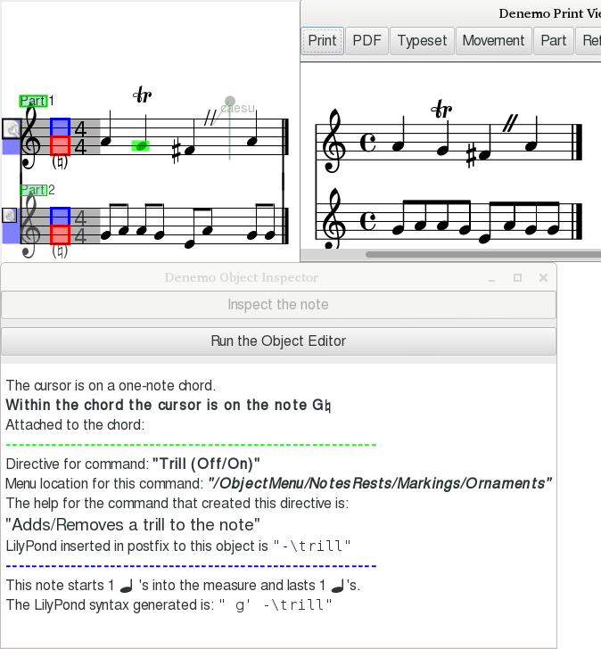
Denemo Directives can also be attached to chords, individual notes in a chord, to a staff, to a movement or to the score; in these cases the directive can be thought of as an attribute of the object it is attached to. In the above example the trill sign is attached to the second note and this directive can be inspected and edited using the Object Inspector
10↓ and Object Editor
11↓. Denemo Directives attached to the staff, movement or score can be inspected/edited too, using the relevant editors
12↓,
13↓.
If there is more than one voice on a staff it is best displayed on a separate staff in the Denemo Display, for ease of editing - the clef is drawn pale and there is no time signature for such extra voices so it is easy to understand what is going on. The Print Preview window as usual shows the final typeset appearance. The clef in this case only affects the display, and any time signature or key signature set on it would also only affect the display.
In the Denemo display a cursor shows where the next note will be entered/edited. It is red for an over-full bar, blue for appending into an under-full one and green when editing (i.e. on an already entered object).
The menus in Denemo are unusual: they not only let you do some particular action, but also each menu item lets you add the command to a palette, enquire what the action does in more detail and set keyboard/mouse shortcuts for the action. A single keystroke can be set as a shortcut simply by pressing the key while the menu item is selected. All the extra functionality of menu items can be accessed by right-clicking the menu item, while the usual left click is for executing the action itself. The menus can always be torn off for working with particular items (e.g. working with different movements or with measures, dynamics etc.). When you place a command in a palette you can add to an existing palette or create a new one - you can choose or create any number of these, free-floating or docked in the main display. Also available by right-clicking is creating new actions - often by modifying ones that are already there - using the Scheme scripting window.
When a file is loaded it opens at the point where you left off editing it. The position and size of the window is restored as well as the position and size of the source pdf you are transcribing from.
3 Denemo Main Window
The main window has menus and toolbars at the top, and palettes at top and/or right hand side. Which menus and palettes are shown are selected via the View menu. At the bottom is a status line showing which movement you are in and what sort of object the Denemo Cursor is on. If there are any MIDI filters active or other messages they will be noted at the right in the status bar.
In between is where the music input is displayed, the Denemo Display area. When zoomed out you see just the few measures you are working on. By dragging the red bar at the bottom of the score upwards you get space for more of the music. If you have many staffs they may not all fit: you can still scroll the display to see several lines of just one or two staffs for instance.
You can hide staffs in the display if needed using the Staffs->Display Effects menu. If you need more room you can hide the menus (using the View Menu, shortcut Esc key), and arrange a "page view" of the input music - useful when using playback.
At the start of each staff are the staff tools: the flag icon lets you set whether the staff will be muted or non-printing and various other properties set on the staff; below that the staff number can be clicked to edit the Denemo Directives which you have installed on the staff. All these are available from the Staff/Voices menu.
3.1 The Denemo Display↓
The area showing the input music is called the Denemo display. It shows staffs and voices and the music interspersed with any Directives. The background is grayed out when the focus is elsewhere - click on the display to start typing in notes. The background is also colored when input from any attached MIDI keyboard is not being used for appending/editing the score (as it is by default).
The default view has a single system stretching off the sides of the window - the actual division into lines and pages for the typeset score is done in the Print View
7↓. In order to see more of the music on the screen at one time there are three changes to the default view you can make. Firstly by pressing the Esc key you can switch between three views, two of which have no menus taking up space. At the bottom of any of these is a red line which can be dragged up to split the display into separate lines. Using this you can display more bars of music at the expense of seeing more staffs for each system (the scrolling allows you to choose which staffs to concentrate on). As usual, this division into lines has nothing to do with the typeset view - widening the window will change the positions of the “line breaks” but have no effect on the final typeset score. Actual line breaks in the typeset are managed by the LilyPond typesetter and can be overruled by commands in the Directives menu.
The second way of getting to see more of the music is simply to zoom the Denemo Display (Ctrl-mouse wheel is best). Again this is purely for the input display - you use commands in the Score and Directives menu to control the size of staffs, titles etc. in the final typeset score.
Lastly with large (deep) scores - orchestral scores for instance - you may want to hide staffs in the display while you work on others. For example, you may want to hide all but the woodwind section. The commands for this are in the Staffs menu - you may want to change the keyboard shortcuts for navigating staffs (Ctrl-up arrow etc) to invoke the staff moves that skip over hidden staffs in this case.
3.1.1 The Page View
The third of the three Denemo display modes that you get with the Esc key is called the Page View - it is set up initially with a small zoom factor and several systems showing. In this view the cursor highlighting has a large green circle around the cursor position and the display will animate during playback. As the music starts playing the second system down the page the top of the page is “turned over” so that, as you reach the bottom of the page your eye can move up to the top of the page and follow the music on. Once the music starts again at the top of the new page the rest of the page is filled in replacing the old page.
3.1.2 Transition Animation
One of the problems with moving about a score looking at the input music is that it can be difficult to see quickly where the cursor has moved to. An even more tricky situation arises when deleting empty measures - often the next measure is empty too, so it can appear that nothing has happened, it seems the command to delete a measure isn’t working. What has happened is that another empty measure has moved in from the right and the display looks unchanged.
To avoid these problems these transitions are animated - the measure coming in from the right can be visually seen to shunt in from the side; similarly staffs move up from below and the cursor arrives at its new position by shrinking onto it. All these animation effects (and the page animation of the previous section) can be turned off via View->Highlight Cursor.
3.2 The Main Menubar
The Main Menubar has menus for overall control of the program. It contains the following submenus:
-
File
-
Navigation
-
Edit
-
View
-
Input
-
Playback
-
More
-
Educational
-
Help
Use the
File menu to perform global operations related to storing and retrieving from file systems, importing from MusicXML
↓, MIDI, and LilyPond
↓ formats, printing full score or parts, exporting to MIDI, Ogg, Wav, LilyPond
↓ (parts or score), PDF and Png formats. This is also where you open PDF files containing source material - e.g. manuscripts - that you wish to transcribe or proof-reading comments you wish to incorporate in your score. Another sort of source material can be loaded from here - audio files can be loaded for transcribing as well as MIDI files.
The New command starts a new score, while New Tab creates an empty score while leaving the current score open - a line of tabs appears at the top of the display for switching between these. Note that you do not have to have multiple scores open to copy and paste
↓ between scores - opening a new score does not alter the clipboard.
Open Submenu
The Open command (Ctrl-o) opens a Denemo file for editing. Open Template opens one of the templates provided with Denemo - this is like open except the file once opened becomes untitled, forcing you to give it a name on saving. Open Example is similar, but here the scores are intended as examples of how to do particular things - they can also serve as a place to copy and paste from. Open Custom Template opens the directory where templates you have created with Save Template are stored. If you create a template called Default.denemo then the command Open Default Template will load it (Ctrl-n). Add Staffs and Add Movements take staffs or movements from the Denemo file chosen and add them to the current score. Open inNew does a combination of New Tab and Open.
Open Proof Read PDF
↓ is for adding proof reading annotations into your score, see section
22↓.
Open Source for Transcribing allows you to open the source material you are transcribing from so that links can be placed in your score to the relevant place in that document. For more details see the section
21↓
Open recent gives access to a list of recently open scores (you can control how many via the preferences).
Open Source Audio loads an audio file creating empty measures with the audio displayed as a series of note-onsets in a line at the top of the display. The note-onsets can be dragged to achieve synchronization and tempo-matching between the notated bars and the audio. You can then add the notes (by ear) and play the two in sync to listen for discrepancies. This is best explained by the video demos (see
www.denemo.org).
Open Source MIDI opens a MIDI file it comes with comprehensive instructions. Note that many MIDI files are not suitable for transcription - MIDI describes sounds, not notation.
3.2.2 Navigation
This has the commands for moving the cursor around the score, bookmarks, and seeking places in the score by content (“search”).
Bookmarks
The commands cover finding the next/previous bookmark
↓ and moving to a bookmark by name.
Cursor
This includes moving the cursor by measure, staff, and within a chord. There are moves that skip staffs that are hidden in the display and ones that skip over staffs that are voice
↓s to move to the next primary staff.
Seek
This has a commands to search for rhythmic patterns, note sequences, empty measures, next higher/lower note, empty measures ... The search facility includes the equivalent of “search and replace”: by recording a sequence of edits in the Scheme Window, the searched for items can be edited by choosing the Execute Scheme option when found.
MIDI
These are commands to move along the note onsets in an imported MIDI file (guided MIDI import).
The
Edit menu collects command for editing: mostly editing objects in the display, the Denemo Objects
Denemo Objects↓but also editing global properties of the score and your preferences.
There are commands for deleting the object before the cursor, the object at the cursor and for partially deleting from the object at the cursor (e.g. deleting notes from chords). Other delete commands are in the Object Menu (deleting movements, staffs, measures etc).
There are commands for editing all the Denemo Objects of a chosen type across the whole of a score. Commands for managing the
selection↓ are also here. Editing using the keyboard to invoke a palette button is here too (usual shortcut is
p).
Here, too, you invoke editing the Preferences
↓.
The NotationMagick submenu is for generating random notes, reflecting, reversing, shuffling notes etc - the sort of things computers can do with music easily but humans find more difficult.
Copy/Cut and Paste↓
The usual shortcuts (
Ctrl-c Ctrl-x Ctrl-v) are set by default operating on the
selection ↓. With no selection the Copy command copies an attribute attached to the note/chord at the cursor, such as an ornament or fingering. If there is more than one attribute set you are asked to choose which to copy. If there are none, the object at the cursor is copied. In all cases
the copied item is highlighted in green so you can be sure that your keypress has been “heard”.
Use the View menu to toggle toolbars and palettes used with the mouse.
Hide/Show Menus
Three ways of showing the Denemo display
↓ area are supported. With/without the menus and as a multiline page (actually, any page can be a multi-line page, but usually the third one is chosen for this). This command cycles through the three displays - usually the Escape key is the shortcut.
Typeset Music
Shows the score as engraved by the LilyPond typesetter in the Print View window. Some things such as the shape of slurs and position of marks can be edited here graphically.
Playback
Shows the score engraved on one (long!) page for playing back. You can click on a note to start playing back at that point, or drag over a range to play that range, or shift-drag to loop over the range. All the standard playback controls (see below) also work on this view.
Command Center
Search for commands by entering likely words, set up one key or two key shortcuts, load customized shortcuts or commands ...
Score Layout
Show the score layouts associated with this score. The score layout is the final section of the LilyPond syntax that describes how to layout the staffs, voices, lyrics, titles etc.
Snippets
Shows a menu bar with snippets - a selection of Denemo Objects used either for pasting or to define a rhythmic pattern to be followed when entering pitches. (see section
6↓)
Tools
The conventional icons for Open, Print etc
Playback Controls
When checked a set of playback/record controls are placed above the display (see section
3.4↓)
Midi In Controls
When checked a set of controls for a connected MIDI keyboard are placed above the display (see section
3.5↓)
Score Titles, Controls etc
If this is checked any Titles, indent settings etc applying to the score and movement can be shown as buttons above the display. (They must be created with their graphic field set for this, not all commands use that, so nothing may show).
Object Menu
Menus of all the Denemo commands listed under type of object from Score down to the types of Denemo Objects (e.g. clef change objects, notes ...).
LilyPond↓
Pops up a window for customizing the syntax that Denemo generates for the LilyPond engraver to typeset and viewing any errors LilyPond reports.
Scheme Script
Pops up a window for showing scripts written in Scheme
↓. These can be executed or saved as new commands. Sequences of commands can be recorded here.
Score
This hides/shows the main Denemo display
↓ . This is probably useless for most people, but might help a very old slow machine playback smoothly.
Cursor Highlighting↓ (Off/On)
The cursor flashes, and in the page view
3.1.1↑ it is circled. The rate of flash is set in the Preferences. The cursor animation is turned on/off with this too.
Palettes
Gives access to palettes of buttons that can be arranged to make commands available via mouse or keyboard (via the Activate Palette Button command).(see section
4↓)
Display Zoom↓
Zoom the main Denemo display (usually done with ctrl-mouse wheel).
Object Inspector
Opens the Object Inspector
10↓ on the current object.
Use the Input menu to select external sources (Audio from the Mic input or MIDI) for inputting notes to Denemo. To use these you should review the settings in Edit->Change Preferences MIDI and audio tabs first - change the setting for the backend from “default” to the specific controller you have.
Here too there are commands to change the way the inputs (keyboard, mouse and MIDI) behave.
Use the More menu add commands to Denemo. Extra commands are available (those which not everyone will want) via this menu. More Commands gives commands shipped with Denemo, while My Commands gives ones that you have created locally. Note that the extra commands can also be loaded at the menu where you are looking for them (you right-click on a menu item, and if there are more commands for that menu the More Commands for this Menu item will show),
Use the
Playback menu to listen to the current movement. Denemo lets you hear your score, using an internal synthesizer. There are commands to play through the all the notes or to observe repeats or to play just the chord or notes at the cursor and to play at a shifted pitch. The default playback is quick and simple rendering of the music - good for checking pitch and rhythm. For more sophisticated playback open the Playback View
9↓ where the playback happens on a fully typeset score.
Playback uses a pair of marks to decide where to start and stop playing. These appear in the display as vertical green and red lines down through the notes concerned
when the playback control panel is visible. These markers can be moved about by the arrow buttons on either side of the play button in the Playback Controls
3.4↓ and they are set for you by the Play from Cursor to End, Play Music at Cursor, Performance and other commands in this menu.
There are games and exercises to help learn notation and to improve your recognition of intervals. Mostly quite simple, but a more sophisticated example is a command that loads Handel’s figured bass exercises and allows you to try them out, recording your playing and then reporting on any parallel intervals. Teachers with an interest in programming can create further games using the Scheme window and save them for use by their pupils.
Use the Help menu to get help using Denemo. A list of the shortcuts is available (including any you have set yourself), a feature-packed score can be loaded, the excessive help can be tamed, and your browser can be launched on the Denemo chat room for asking questions directly from other users.
3.3 Toolbar
Use the Toolbar to access common Denemo commands via a mouse click. The Toolbar contains the following icons:
|
|
Creates a new document.
|
|
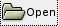
|
Opens the Open File dialog box.
|
|
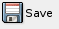
|
Saves the current file
|
|
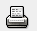
|
Runs LilyPond to convert the current file to PDF and sends it to the printer for printing
|
|
|
Undoes the last action.
|
|
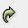
|
Redoes the previous undo action.
|
|
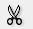
|
Cuts the current selection to the clipboard.
|
|
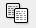
|
Copies the selected notation to the clipboard.
|
|
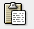
|
Pastes the current clipboard item at the cursor position; to be safe always create blank measures to fit.
|
|
|
Jumps to the first measure of the movement.
|
|
|
Jumps to the last measure of the movement.
|
3.4 Playback Controls↓
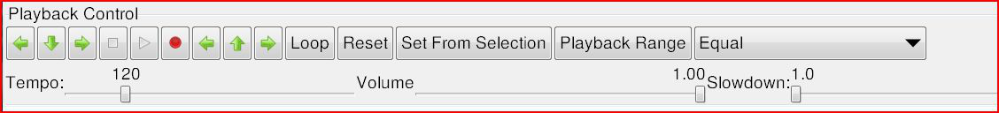
As with all controls and menu items you should hover over the buttons with the mouse to get an explanation of what they do.
The playback starts at the playback start marker (a line in green down the score in the Denemo Display) and stops at the playback end marker (a red line). These lines are not displayed all the time, just once the play has been used at least once. The start/end markers can be altered with the arrow keys on either side of the Play and Record buttons. The arrows to the left adjust the playback start, those to the right the playback end (hover over the arrows for details).
The Play Selection button plays the selection or, if no selection plays from the Denemo cursor position to the end.
The Mute Staffs button allows you to select groups of staffs to play, muting others.
Always Full Volume if checked means that the dynamics
↓ in the piece are ignored - good for checking note pitches are correct.
Playing of sections of the music and looping is possible (including editing as the music loops, so that you can listen to different possibilities) as well as recording the audio output (mixed with anything you play on your MIDI keyboard if you have recording set in the MIDI controls).
The master tempo
↓ and volume can be set, which will be overridden by tempo and dynamics placed in the music.
Recording the audio output is also possible as well as real-time slow down of the audio playing back (not to be confused with simply setting a slower tempo!). This last is used when transcribing from audio (See File->Open->Open Source Audio).
While playing back the note(s) being played are highlighted - the page view mode
3.1.1↑ of the Denemo Display is useful for letting you follow the music in the input display. You may need to adjust the window size and the division into systems (drag the horizontal red divider) to get a good effect from this.
Playback is not restricted to equal temperament - the drop down menu allows you to choose from a variety of historic temperaments for playback.
All these commands can be used in conjunction with the Playback View window, which lets you see the playback animated on a properly typeset score. And you can also initiate playback from the Typeset View by clicking on noteheads there.
3.5 Midi In Controls↓
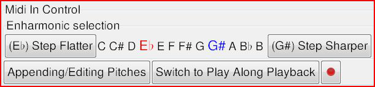
These are the controls for a MIDI keyboard attached to the computer. You should set the MIDI InputDevice to your device in the Preferences to be sure all features are working.
The Enharmonic Selection control lets you determine what accidental will be used for the MIDI notes - e.g whether to enter C-sharp or D-flat. The buttons at each end change the enharmonic range sharper/flatter.
As you enter music if you enter an augmented or dimished interval a different instrument is used for the playback which helps you avoid pitch-spelling errors. (See Edit->Change Preferences->Audio pitch spelling channel/program
15.6↓ to turn this off/change instrument).
[Appending/Editing] button: This shows how MIDI in will be treated. Press Control/Shift/Alt keys to modify or click and select Listening to input MIDI, Checking notes in the score against input MIDI or Appending/Editing at the cursor.
[Switch to Play Along Playback] button: When you press Play with this option set, the music will not advance past the cursor until you play the note. (Mute the current staff to prevent double sounding of notes)
The [record] button allows you to record from your MIDI keyboard while the score is playing back. (Press MIDI record button then start playback). Once the playback is stopped anything you have played on the MIDI keyboard has been recorded and two buttons Convert and Delete will appear. If you press start playback again (without record) the MIDI recording will be played back with the score, once you are happy with it then it can be converted to notation or if, you want to try again, deleted.
3.6 Object Menus
The object menu bar gives a set of menus give ordered by the objects (notes, staffs, measures ...) that they relate to. This division cannot be perfect - some activities could be placed in different menus, so you need to be prepared to search for commands using the
The Command Center↓Command Center.
Note: Dynamics, Slurs, Trills, Tempo Indications etc are in the Notes/Rests menu (if attached to a note or chord) or Directives menu (if standalone objects) . The advantage of attaching them to a note is that they can be moved around as a unit, but the standalone objects are generally easier to drag in the Print View should that be needed.
3.6.1 Score Menu
The score menu lets you control things that apply to all the movements of the current score. Also here is the Check Score command which should be your first port of call if your score will not typeset.
The Score Properties command gives access to some built-in properties that affect the whole piece - paper size and display apperance.
The Score Properties Editor command runs the
12↓Score and Movement Properties Editor, open on the Score Editor pane.
Titles↓ Submenu
There are two sorts of titles. Book titles have a separate title page with titles for individual movements which can be listed in an automatically generated table of contents. Simple titles give a Title and (optionally) movement titles on the same page.
Comments (“Critical Comments”) can be placed on chords/notes/rests in the score and these can be automatically collected into an appendix using the Book Titles->Epilog submenu.
A Table of Contents can be automatically generated from the movement titles by setting Book Titles->Table of Contents Title.
Graphic title pages can also be created. These can be created by invoking the Inkscape vector graphics editor from within Denemo, or using it externally to create the title page. A sample title page is included both as an encapsulated postcript (EPS) file and as a scalable vector graphics (SVG) file. The latter is the form to use for editing the page to suit your needs, but it should also be saved as an EPS file as this is the format used to include it in the typeset score.
Typesetter Submenu
Here such things as the overall font size to typeset the score, the rules for spacing systems and titles, any global transposition, control of page numbering, margins etc can be set.
The beaming
↓ rules can be set both in general (invoke Set Beaming Rules without a selection) or with exceptions (by invoking with a selection that has been beamed manually using the [ and ] commands from the Notes/Rests->Beaming menu). Use this latter to break up very short notes, for example, that would otherwise be beamed together while leaving the longer durations as normal.
3.6.2 Movements Menu
As with the Score Menu there may be Denemo Directives attached to the movement - e.g titles
↓ to be placed at the head of the movement will have a Denemo Directive associated with them. Other controls that can be applied on a per-movement basis include the barline
↓ and notehead style, printing of a custos at line ends, the indent
↓ before the first system (which can also be set on the score-wide basis).
Various score checking routines work at movement level from this menu and a command to re-bar the movment (or a staff or part of a staff) is also here as “Adjust the Measure Lengths” - this can also be used just to check that the Denemo “measures” correspond with the actual typeset measures (which always follow the durations/time signatures) or to re-bar a staff or passage or movement if you have changed your mind or got out of step.
Again there are titles menus for either simple or book titles, and for inserting graphics between movements. These can be used as decorative separators between movements or to insert columns of verses at the end of songs (each song is a separate “movement”).
The Typesetter submenu for the Movements Menu holds commands that affect the current movement: per-movement transposition, inserting blank pages
↓ (to avoid page turns), page breaks
↓, custos
↓ at the end of lines, note head style to apply to the whole movement, behavior of staffs that are resting for an entire system etc. Also here is a command to allow
polymetric staffs↓. When set time signatures can differ between staffs, and barlines do not have to align across an entire system. Denemo’s display copes with showing polymetric staffs on the whole, though you may need to use Measures->Hidden Measure to even up staffs in the display and mark measures with Measures->Ignore Measure Duration Error to prevent them being colored in the display.
3.6.3 ↓Staff/Voices Menu
Things such as the music crossing to another staff, or Ossia
↓ staffs are contained here, along with commands for deleting parts of the staff, setting up multi-measure rests for a whole staff, muting the staff during playback,
The Staff Properties↓ Submenu
This covers such things as the type of staff (e.g. Normal Notation, Tablature, Chord Symbols, Fret Diagrams) as well as the staff appearance and the playback instrument, instrument name or ambitus to be typeset at the start of the staff and more.
For historical reasons, some properties such as part-name are “built-in” and have their own dialog to set the values. All can be accessed from the Staff Properties Editor
↓ from this menu.
The Add Staff Submenu
This allows adding staffs to the current movement. Piano staffs can be added as well as specialized sorts of staff for dynamics
↓, marks (so that they appear once for all layouts), and coulés (diagonal lines positioned between thirds in some music). The Add Structured Staff command duplicates the current staff with regard to measures and time signature changes, ready for the insertion of music. Add Staff for Instrument allows you to add the staff(s) needed for various instruments (e.g. organ) with the ranges of acceptable notes for the instrument set on the staff(s).
Staffs with “mirrored” music can also be added. In this case the staff does not have music of its own, instead the music mirrors that in another staff. By setting the part-name
↓ on such a staff a greater variety of parts can be printed from one score without needing to create a custom layout
↓ for them. For example, two flute parts can be printed separately and as a combined (“divisi”) part, using the same music. Any marks etc that need to be handled differently can be made conditional
↓ on the part name.
The Voices↓ Submenu
Voices in Denemo are like staffs but are typeset on the preceding staff to achieve single-staff polyphony. The Denemo Display is normally set to display any extra voices on a separate staff so as to make it easy to work with - the voices have their clef
↓ displayed in yellow and do not show a key signature
↓ as these are supplied by the main staff (or “primary voice”). Voices will also normally be assigned to voice numbers 1,2,3,4 using the Initial Voice commands in this menu (this controls the stemming, slur positions etc). Voices can change their voice number during the music - the commands for this are in the Directives->Typesetter->Voices menu as they insert stem change objects in between the notes.
As with staffs, voices can be created with no music of their own, simply mirroring music from another staff.
The Display↓ Effects Submenu
Here you can choose to hide staffs from the display so that you can see distantly placed staffs side by side (e.g. in large orchestral scores). The location of such “hidden” staffs
↓ is indicated by a colored line between the staffs above and below. The staffs remain hidden until you move the cursor on to them. If you are using this and navigating with the keyboard you may want to reset the key shortcuts for staff navigation commands to use variants that skip over the hidden staffs. Some staffs (e.g Click Track
↓ are hidden by default as you do not normally edit them.
You can also give more/less room in the display to the staffs via this menu.
The Staff Groupings (Braces) Submenu↓
The braces at the start of each system are controlled from here. The order that you add the braces determines which are outside which. The braces are displayed to the left of the staff and can be edited/checked there with the mouse.
All sorts of clefs can be selected - the Set Initial and Clef Change commands give access to standard clefs. The Clef Chooser command lets you set more exotic clefs such as Drum clef and even things like the Gregorian chant C clef using the LilyPond syntax (e.g. vaticana-do3).
Typeset-only and Display-only clefs enable you to work with a voice
↓ which is being typeset on a different staff, while keeping the music in the staff you wish to see it in or for entering music in a familiar staff which is to be typeset in an unfamiliar one.
Setting the initial key or a key signature change or to sharpen or flatten the key signature at the cursor. You can also click on the key signature itself to sharpen/flatten. The key signature can be hidden when typeset.
3.6.6 Time Signatures Menu↓s Menu
Besides basic time signatures various variants (numeric, single digit ...) are here. There is also beaming
↓ control applying just to the current passage (for beaming rules for the whole score see the Score->Typesetter menu or for the whole movement Movement->Typesetter menu).
Cadenza Time allows un-metered music to by typeset conveniently. While in Cadenza Time no barlines except ones you explicitly place are typeset, and no beaming is done except where you explicitly set beaming indications. You can use as many Denemo “bars” as you find convenient - they will not cause barlines to be typeset. Other parts have to be given Cadenza Time too, and filled with non-printing rests to match the duration of the music being typeset.
3.6.7 Measures Menu↓↓ Menu
Besides commands to insert/delete/navigate/merge/split measures (in one or all staffs) this menu includes commands to set an upbeat
↓↓↓ (anacrusis, pickup) measure at the start, or a short measure (e.g. during partial first & second time bars). First and second time bars markers themselves are to be found in the Directives->Markings->Spanning menu.
The whole measure repeat sign is here and some commands to check the measure for errors or to widen or narrow the measure in the display.
Here are commands to add notes to a chord either at the cursor, by note name or at an interval above the bass. Whole chords can have their enharmonic spelling changed up or down.
3.6.9 Notes/Rests Menu↓↓
This covers inserting, deleting and modifying notes in pitch, duration and appearance and all sorts of things that are attached to note objects such as slurs
↓, phrasing slurs, ties
↓, beaming
↓ controls, ornaments
↓ (trill, turn ...), grace notes, articulations
↓ (staccato, tenuto ...), fingerings
↓, textual markings
↓, cresc. and dim.
↓ (both hairpins and extended cresc. — poco — a — poco style) chord symbols
↓ (“fake chords”
↓), figured bass. Dynamic markings such as
f and
p are separate objects (see Directives->Markings->Dynamics
↓).
Also here is the tuplet
↓ menu, for groups of notes that have a duration that is a fraction of the written duration, such as triplets. These actually insert tuplet start and end objects, before and after the notes concerned so, strictly speaking they should come in a separate miscellaneous objects category. As usual, the most useful commands have shortcuts already - Tab starts/stops a triplet alternately (so you can press it once, enter the notes and press it again to finish the triplet). And the two key shortcut Keypad 7, Keypad 7 turns the note entered into a triplet of notes (with Control as well they are slurred). This is set as a two-key shortcut so that you can type it in as a triplet rhythm: e.g. the three keypresses 4, KP_7, KP_7 will give a triplet of three 1/16th notes.
The Append/Edit Note Submenu↓
So called because in appending position the note names a, b, c ... append a note while when the cursor is on an note it edits the note to have the note-name indicated. The other note edit commands here are shifting up and down an octave, sharpening or flattening. Cautionary and reminder accidentals are here too - to set the style of accidentals (e.g. if they are repeated in various circumstances) see the Score->Typesetter menu.
The Note Insertion Submenu
This menu has commands for inserting notes at (i.e. before the object at) the cursor position. The double key press A, A inserts the note A in the prevailing duration (more commonly people press a duration key 0, 1, ... followed by a note name).
If you enter a note and then sharpen you will hear both note and sharpened note - to avoid this use the “Sharpen Next Note” command (likewise for flatten, use twice for double-sharp,flat) the default key presses are ’=’ and ’-’ for these.
The Append/Insert Duration↓ Submenu
So called because the commands 0, 1, 2 ... append a note when the cursor is in the appending position or enter a note if the cursor is on an object. If you have a MIDI keyboard (and it is designated in the preferences under the MIDI tab) then the note will be purely rhythmic (yellow/brown) playing a pitch will turn it into a real note. Here is the command for entering a snippet (which can be a complete rhythmic pattern) as well as Breve and Longa for early music.
There are also a set of comands for appending notes which will be slurred from previous notes (Control-0, etc) which means that you can enter slurs as you enter the rhythm of a bar without extra key presses (which would otherwise break the rhythm of your entry).
The Edit Duration↓ Submenu
Here are the commands for changing the duration of the note/rest/chord
↓ at the cursor as well as doubling or dividing the note at the cursor.
Besides commands for dotting notes there are commands for turning the note at the cursor into a dotted rhythm of two notes and for entering a dotted rhythm with two key presses (so as to keep in rhythm - e.g. 3, KP_9 gives dotted 1/8 note, 1/16th note, and the corresponding slurred one with Control).
The Rest Insertion Submenu↓
Besides inserting rests (Alt-0 etc) you can insert non-printing rests (where voice
↓s are silent) and move rests out of the way in polyphonic situations where LilyPond doesn’t do what you want. Whole measure rest
↓s and multi-measure rest
↓s are here too with control over their numbering.
The Select Duration↓ Submenu
The commands to explicitly set the prevailing duration are here (though usually this is set by inserting a duration) and, more importantly the command to select a snippet as the prevailing duration (Shift+ Space) after which entered notes follow the pattern of the snippet.
3.6.10 Directives Menu↓
This covers all the things that aren’t notes but sit in between them -
standalone Denemo Directives. The most useful for regular music notation are barlines, dynamic markings, tempo
↓ marks, rehearsal marks etc in the Markings submenu. There is an enormous collection of stuff here though.
All objects, including Denemo Directives can be inspected and edited via the Object Editor
One general feature is the Conditional Directives
↓ which can be used to restrict a directive to a particular type of score layout
↓ (e.g. only to be used when printing a part, or a full score). This can be used, for example, to prevent a cue being printed on the full score (as it is only relevant when printing the part).
Note there is a further class of Denemo Directives, the ones
attached to notes/chords/staffs/movements/scores - these direct the typesetter to do special things such as attach fingerings, ornaments etc. Denemo Directives are described in a separate section
28↓.
See section
18↓ for a description of how lyrics are handled in Denemo. The lyrics menu includes the following commands:
Add Lyric Verse
Appends a verse to the verses attached to the current staff.
Insert a Highlighted Lyric
inserts a bold and/or italic word into the lyrics at the current lyric cursor position.
Skip Syllables in Selection
Inserts special syntax to skip the number of notes you currently have selected in the Denemo Display.
This is useful if you have a musical introduction or interlude in a song.
Insert Stanza Number
Asks you for some text (usually the number of the verse) and inserts the special syntax to typeset this before the next syllable, leaving the syllable position undisturbed. Normally the lyric cursor should be at the stanza/verse start.
Syllable Alignment
Inserts special syntax to cause the text to be aligned with its start or end below the note (rather than the default centered position). This may be useful for chanted text.
Melismata
-
During Word, with Slur - The typeset score will print hyphen(s), if needed, showing continuation to the end of the slur
-
Word End, with Slur - The typeset score will print a lyric extender to the end of the slur (a continuous underscore).
-
During Word, no Slur - The typeset score will print the syllable extending under two notes inserting hyphen(s), if needed, showing continuation
-
Word End, no Slur - The typeset score will print the syllable extending under two notes inserting a lyric extender as needed
-
Extend Melisma - The typeset score will extend the melisma over a further note.
Divide Syllables with Hyphen
Inserts syntax to typeset hyphen(s) if needed between syllables that underlay successive notes.
Insert Mirrored Verse
permits a mirrored copy of a verse from another stave to be included on the currrent staff, for example when the words for two parts are the same but on separate staffs. Then if the words need editing, just the first copy needs to be changed.
Lyric Tie
Inserts the syntax to separate two words which should be typeset under one note.
Dynamic
Inserts a dynamic marking (ff, f, p, or pp) directly in the lyrics. You can edit the insert for other dynamics.
Typeset Verses at End
This takes several verses and uses the Movement->Titles->Text after Movement command to typeset them at the end of the movement arranging them in columns.You are given a choice as to which verse to start from. Normally you would then delete these verses from the staff so they are not repeated. Issuing the command a second time allows you to delete, replace or edit the end-of-movement text.
Change Font
Inserts a change the font for the lyrics from the current lyric cursor position. Short forms such as Sans, Times can be used.
Larger/Smaller Font Size
Inserts a change in the font size for the lyrics from the current lyric cursor position onwards.
Typeset On/Off
Turns typesetting of lyrics off or on (this does not affect end-of-movement text).
3.6.12 Notation Magick Menu
This has been moved to the Edit Menu.
4 Palettes↓
Palettes are collections of commands arranged as a column, row or grid of buttons either in a separate window or docked in the Main Window.
The buttons are not just for mouse users - palette buttons can be executed by typing p followed by (part of) the label of the button followed by the Enter or Return key. The entry for keying in a palette label looks like this:
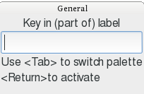
At the top is the name of the palette that is active, in this case the “General” palette. You can switch to a different palette with TAB - the palette does not have to be displayed on the screen, but if you type a label that does not exist it will be shown to remind you.
To make full use of the keyboard for executing commands from your palettes you should edit the labels so that they are easy to type & memorable. Put the shorter ones first as you do not need to type all of the label, just enough to select the needed button. Right-clicking on a palette button allows you to edit the button, changing the label or tooltip, duplicating the button (e.g. to create an edited version of its script) and more, as in the following popup:
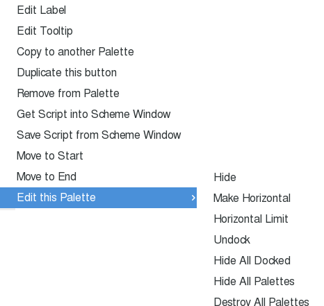
You can also edit the palette itself by right clicking on any button and choosing the Edit this Palette submenu (shown open above). You can make the palette fill up horizontally or vertically and restrict the number of columns/rows respectively. You can dock/undock palettes as well and hide palettes that are not needed (you can also hide undocked palettes by dismissing their window).
In the View menu you can select a palettes of commands to display or show all the palettes and then hide the ones you don’t want.
You should make palettes your best friend - when you find a command in the menu system that you need right click on it and choose Add to Palette. This way you will build up one or more collections of commands that you need.
Palette buttons can also be created directly from objects or Denemo Directives so that you can duplicate them in your score without having to copy and paste. So, for example if you run Help->Open Feature Packed Score and find the type of object or attribute you need there then you can run the Object Inspector or one of the editors on it and create a palette button for installing the same thing in your own score. See the sections
10↓11↓ 12↓13↓for more details.
Changes you make to palettes are automatically saved when you end the session. (They are stored in a file called palettes.xml, which can be edited directly by the more techie-minded).
4.1 Articulations↓ Palette
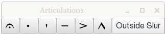
These buttons turn on/off the articulation. These will apply to the entire selection if you have one and you have the preference
15.2↓ for that set. Outside slur moves the articulation outside an enclosing slur.
4.2 Barline↓s Palette
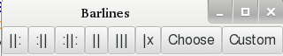
These insert barlines - note only one barline can be at one moment in the music. The Custom button creates a new barline type, specifying the appearance in mid system, end of system, start of system and between staffs.
4.3 Beaming↓ Palette
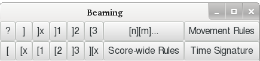
The ? button gives the overview for this palette. Rules can be set via a dialog with exceptions derived from the selection.
4.4 Chord Symbols↓ Palette
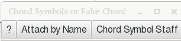
The ? button gives the overview for this palette.
4.5 Insert or Append Chords Palette
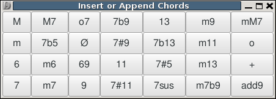
This palette inserts a chord of the given type using the
prevailing duration↓ with the root note for the chord given by the cursor height and any
pending accidental↓. The chord is inserted and labelled in the Denemo Display with its root and chord symbol
↓ (aka fakechords
↓). This is typically used on a Chord Symbols staff (see Staff Properties
↓ menu). You can create additional chord types for this palette using the command View->Palettes->Create Button for Chord Type.
4.6 Custom Ornaments↓ Palette
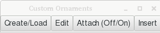
Custom ornaments can be created as encapsulated postscript files using the same methods as graphic title pages. If you have a vector graphics editor (e.g. inkscape) installed and in your Preferences (Externals tab, Graphics Editor) then you can edit from within Denemo. As usual hover over the buttons for instructions.
4.7 Dynamics↓ Palette
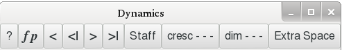
The cresc - - - and dim - - - buttons start or continue textual crescendi/diminuendi - texts such as poco a poco can be inserted and the - - - can finish on a dynamic marking or an end cresc/dim marker.
4.8 Figured Bass↓ Palette
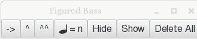
4.9 MIDI Import Palette
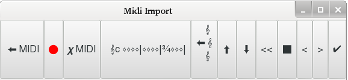
This palette is for guided MIDI import. The instructions are in the tooltips.
4.10 Ornaments↓ Palette
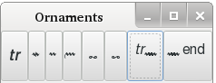
Note that there is a separate custom ornaments palette.
4.11 Piano/Organ Notation Palette
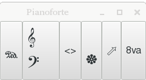
4.12 Polyphony↓ Palette
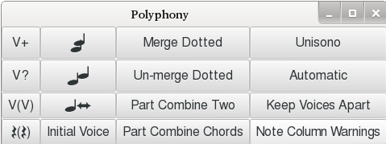
These are the commands to control separate voice
↓s that appear on a single staff. The voices are best displayed on separate staffs in the Denemo display to ease the editing.
4.13 Repeats↓ Palette
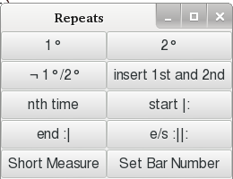
The Nth time repeat can be used to hold any needed text. If an repeat alternative is less than a bar the Short Measure command can be used, and the bar number adjusted if needed.
4.14 Stringed Instruments Palette
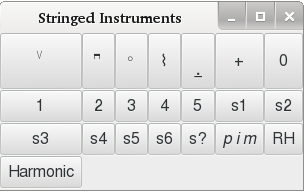
Here are commands for fingerings
↓, string numbers etc. These are attached to individual notes (place the cursor on the note).
4.15 Tied Notes/Chords Palette↓
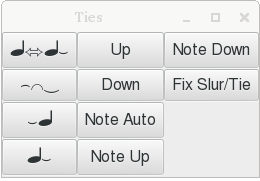
Commands to insert ties
↓ on chords and individual notes, and to control their shape and direction are here.
5 The Command Center↓
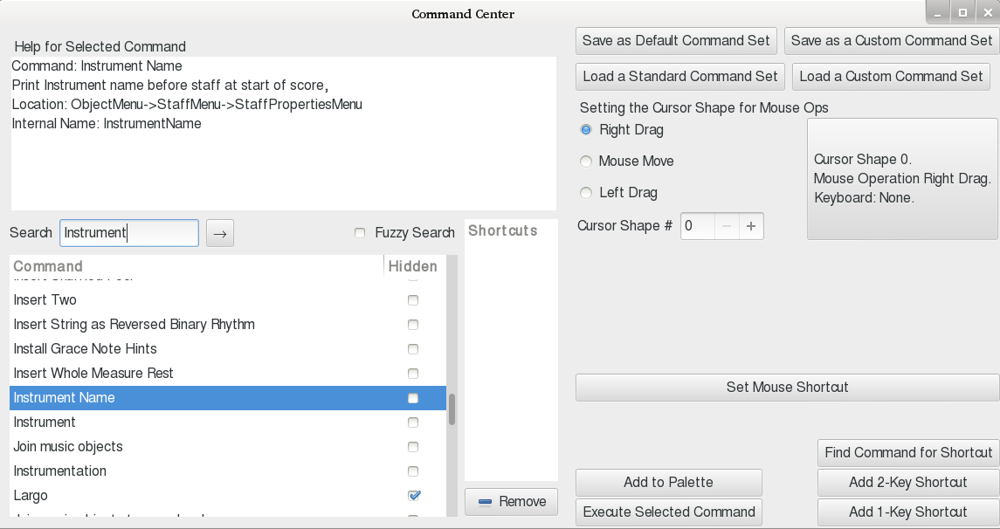
In the View menu you can show the Command Center. This has a list of all the Denemo commands, hidden or not, with their shortcut(s). The box at the top left gives full details of the currently selected command and its location in the menu system. Below that is a search box for finding any command you need by matching words in its description or label. By choosing “Fuzzy” you will make the search less strict - one word could be missing.
The search
↓ starts once you have typed the fourth letter of any key words you want, so check after each letter to see if you have found the command you need. To search for further commands matching your keywords press
Space or
Tab or
Return or click the arrow next to the search box.
The command center is also where you can set one-key shortcuts such as Ctrl-x and two-key shortcuts such as Shift-a followed by Shift-a (which is written as A,A next to the command). You can also look up which command responds to a given shortcut, and execute the selected command here.
In addition you can save and load whole sets of shortcuts and commands. If you have upgraded your version of Denemo and you have elected to keep your customized commands etc then you should run the Load a Standard Command Set choosing Default.commands, as some commands may have moved in the menu system. If there are new palettes in an upgraded version of Denemo then you can get them merged in with your own palettes by clicking “Load the Standard Palette Set” - this does not overwrite any palette buttons you may have, so delete any customised buttons (after duplicating, if desired) that you wish to fetch from the Denemo distribution.
6 Music Snippets↓
6.1 Overview
Music snippets are short selections from a voice which can be stored on the Snippet tool bar. They have two main uses: they can act as a repository of “motifs” which can be inserted (Ctrl-Space) at the cursor, and they can be used as an extension to the “prevailing duration” idea. In the second use, by selecting a snippet as you enter pitches the durations are assigned from the next step in the snippet. The first case is especially useful when entering a complex rhythm which is repeated many times in the piece. In all cases the snippet can contain all sorts of attributes and markings, slurs, beaming indications, ornaments etc, and these will then all be entered with a single keypress or as you add pitches.
6.2 Details
The Snippet tool bar has only one button initially: “Create”. This button lets you create a snippet from the current selection. The selection should be a contiguous selection of objects in a single voice. Once created the snippet appears on the snippet tool bar as a button - the label is generated to indicate the content, and this label can be further edited by clicking on the button and choosing “Edit Label”. Other options on clicking a snippet button are to insert the snippet, to select the snippet (in which case as you enter pitches they follow the rhythm of the snippet, including any slurs, trills, or articulations that are in the snippet) etc.
Ctrl-Space inserts the selected snippet or (if none is selected) inserts the snippet that you specify by number. Shift-Space selects the next snippet (or first if none selected), to unselect a snippet choose a duration (0, 1...) to be used instead for entering pitches.
In the insertion case, you may have two or three snippets that apply to a given score - special bits of text that appear over notes for example - and you can insert them using Ctrl-Space, 1 (or 2 or 3 ...) as needed.
In the pattern-following case you will be selecting snippets using Shift-Space and then playing in notes (and backing up using backspace in case of error - the pattern backs up for you).
7 The Print View Window↓
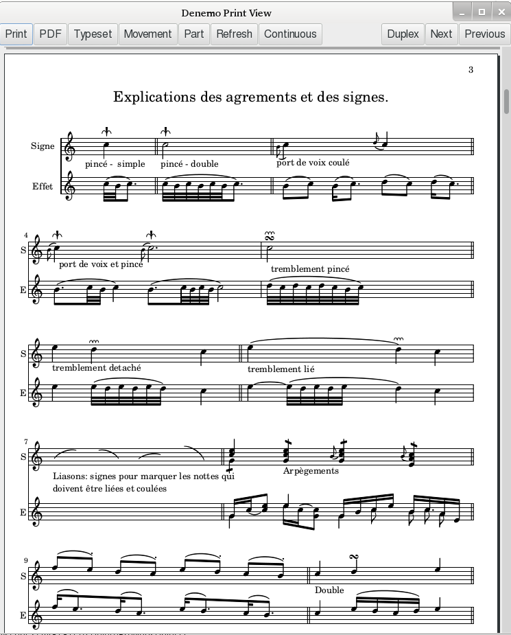
The print view window is shown by checking View->Print View. This view shows the typeset score as it will be printed on paper. It also allows you to locate the place in the Denemo Display belonging to a particular note or mark in the score, start playing the music at any note and allows some graphical editing of the score.
7.1 The Buttons
-
Print starts your system’s print dialog to send the typeset score to a printer or file. Windows print dialog has been reported to crash, if so use the PDF option.
-
PDF↓ to generate a PDF document from the score.
-
Typeset. Offers a menu of score layouts↓ to typeset. If only one is available (the Default Score Layout) then it typesets that one.
-
Movement. Creates a Score Layout comprising the current movement, and then typesets it .
-
Part. Creates a Score Layout from the current Part and typesets that. A part comprises all the staffs with the part name of the current staff. (The part name of a staff is shown above the initial clef with a green patch on it).
-
Refresh. Repeats that last typeset command. For example, if Part was the last then it typesets the current part (which may be different from the one last typeset if the cursor is in a different part).
-
Continuous/Manual. This both indicates the current mode of typesetting and acts as a menu for altering it and choosing how much to typeset in continuous mode. In continuous mode the score is re-typeset every time it is altered - choose the range if the score is large so that it refreshes quickly. For entering music rapidly set this to Manual, and re-typeset on demand.
-
Range opens the range dialog. You can set the range by selecting “All Movements”, “Current Movement” or “Cursor Context”. In this last one you can select the number of bars before and after the cursor and the number of staffs above and below the cursor to typeset. Note that if you select too small a range the typesetting may be different, as the small amount of music will be spaced differently to appear well typeset.
-
Duplex. Changes the view to show how two-sided printing will work out for page turns.
-
Next, Previous. Navigate to the next/previous page of the score. You can scroll or drag as well.
7.2 Mouse↓ Controls
The mouse scroll wheel enables vertical panning and with Shift horizontal panning. With Control pressed you can zoom the view, which is very important for re-shaping slurs. Right click for help with tweaking beam angles, slurs etc.
Shift-Clicking on a notehead or marking selects the object (blue box appears) and positions the Denemo cursor at that point so that you can start editing. Clicking without shift starts playing at that point - click again to stop the play.
Right clicking in a blank area of the typeset view (normal cursor) gives a menu providing help and allowing you to typeset with the control points for curves and the location points of objects marked as red dots and crosses. Be sure to turn off these red dots and crosses before printing or creating a customized score layout, as they are embedded in the score and will print.
7.3 Editing in the Print View - WYSIWYG↓
Once you have finished entering music into Denemo you may find that you have a wrong note or two or a missed marking or slur when looking over the finished score in the Print View. It is convenient to shift-click (or click twice) on the notehead, marking etc. to position the Denemo Cursor on the object. For this to work look for the “hand” pointer as you move the mouse over the typeset score. The hand pointer indicates a place where if you click the Denemo Cursor will move to the Denemo Object that belongs to that feature.
Once you have located the note you wish to edit you can press the keyboard shortcut (or play the MIDI key or any other editing method) to change the note - to add a staccato marking for example. The Print View will not instantly update, but you can continue editing while it does so. If the Print View is not up-to-date the shift-click may not locate the correct note as your edit may have displaced things; to minimize this it is best to correct faults on a page from the bottom upwards. You are given a warning noise when the print view is not up to date, and a big warning noise if the locating has completely failed.
The navigation using shift-click in the Print View works for noteheads, slurs
↓, ties
↓ and various marks - some other things such as lyrics can’t be used to navigate - choose the note that the lyrics underlie to find the right place in the Denemo Display.
You can actually edit your input music using the mouse on the Print View window - something referred to as what-you-see-is-what-you-get (WYSIWYG), which is how the conventional music editors work all the time. But in doing this it will help if you keep in mind that the Denemo program does not know anything about what LilyPond has actually drawn in the Print View window - Denemo is just displaying the PDF file that LilyPond has created. The PDF file does contain links - the “hand” pointer - so it does “know” about where things are in the Denemo Display, but not the other way round. This means that to use wysiwyg features you have to tell Denemo more about what you are doing than you would expect.
7.3.1 Editing Positions and Padding
Right clicking on some objects in this pane allows you to edit them.Use this for the occasions when LilyPond has positioned things badly.
The editing procedures depend on whether the object is attached to a note or appears between the notes in the Denemo Display. Depending on the object you can drag it to a better position or change whether it appears above or below the note its attached to.
You can also select an amount of padding to apply to some objects so that they keep their distance from other items in the score. Adjusting the padding is generally a better way of indicating that something is too close to something else, since other objects will move away from it as needed and if you later edit the score it will behave more intelligently.
7.3.2 Re-shaping Slurs↓ and Ties↓
Slurs, ties and beaming
↓ can also be altered here. When you right-click on a slur or tie the Denemo Cursor moves to the note where the slur starts and you are offered the chance to edit the shape of the curve. Choose a large zoom factor before you begin, and turn on the control points (red dots and crosses) as described
Mouse Controls↑above. Then right click on the curve and choose Edit Shape. You have to click on the reference point first - this is on the center-line of the staff at the horizontal position of the notehead where the curve starts - this is marked with a red dot. Then you click and drag on the four “control-points” that define the shape of the curve. Once the shape looks good, right click in a blank area and click Apply.
With practice you can skip the use of the red dots and crosses as you can guess where they would be.
7.3.3 Adding Line or Page Breaks.
Page or line breaks added by right-clicking on a note at a barline and choosing from the menu. This works because right-click positions the Denemo Cursor at the note and then the page or line break command is run just as if you were working directly in the Denemo Display.
8 The LilyPond↓ View
In this view the music is shown in the form it is sent to the LilyPond music typesetter. The LilyPond typesetter uses a syntax that can be read and written by human hand (the word c’’ represents the note middle C for example) so this editor allows editing and navigating the music.
The lines are all numbered, and the bars always start a new line, with every fifth bar numbered with a comment “%n”. Directly editable text appears in bold, and additional syntax can be inserted by right-clicking with the mouse. (Equivalent to choosing the “Insert LilyPond” menu item).
The first sections are definitions of the music for each staff/voice.
The last section is the
score layout↓ which can be a custom one or a default layout (or if continuous typesetting is on, a temporary one). If you want to edit the score layout directly as text then you can click on the Score Layout button here and convert it to a custom layout.
There is also a pane that shows any error messages that LilyPond may issue when typesetting your score. When an error occurs the remainder of the text is marked in red. Using the arrow keys to move around this text, the Denemo cursor in the Denemo Display will follow, using the little gray anchors that appear before each note, rest, chord or other music object.
9 The Playback View↓
9.1 Introduction
This is a fully typeset view with (more) full-featured MIDI playback. The music is typeset on one long page against a yellow background and scrolls up as it plays. As a bonus, a single part can be typeset in this view with the whole accompaniment included in the playback - you can play from the part while hearing the other instruments.
To start play from a note just click on the notehead, click again to stop playback. To play a short passage click on a notehead and drag to where you want the playback to end. To loop-play hold the shift key down as you drag from the start to the end of the passage to be looped over. To position the Denemo cursor at a note or rest shift-click a the notehead.
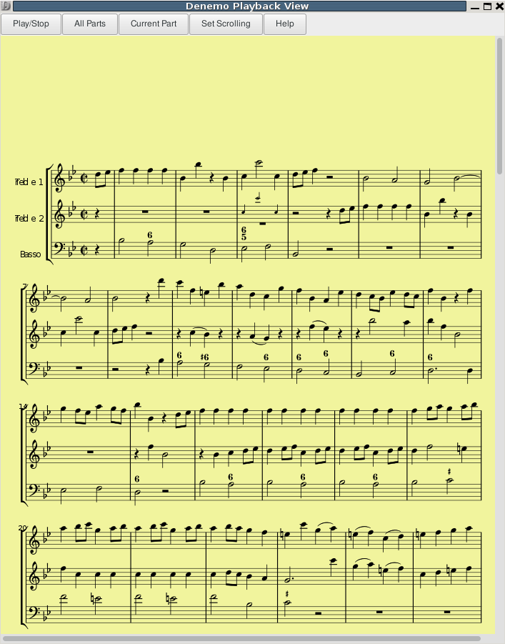
The Play/Stop button plays the whole piece with repeats, (that is the same as the Performance command in the playback menu); if a performance is underway it stops it.
The All Parts button typesets the current movement for playback, generating the MIDI at the same time. The Current Part button does the same but just for the part that holds the Denemo cursor in the Denemo Display - you are asked if you want to keep the MIDI already generated - say yes if you wish to hear the other parts while following just the current part as it plays back.
Set Scrolling pops up a dialog to control simple automatic scrolling. Clear Scroll Points clears the list of scroll points if present (see below).
9.2 MIDI Playback.
In the Playback View the MIDI is generated by LilyPond and has many more features than the simple MIDI generated by Denemo. This playback can still be controlled by the same commands in the Playback menu or the Playback Controls Panel and left-clicking on a notehead in the Print View, but in addition you can start play from any point in the music just by left-clicking on a note in the Playback View. Furthermore, in the Playback View, to play a section of the music click and drag to the end note desired. For a looping play hold the shift key while dragging.
If you alter the music then you need to re-typeset this view before you can play with Playback View.
9.3 Scrolling
You can either check the Set Scrolling check box to automatically scroll as you listen, or you can set scroll points to determine exactly where the page will be when the point clicked is playing.
9.3.1 Simple Scrolling Control
For simple scrolling click the Simple Scrolling check box. The music will start to scroll after a while and continue at a steady rate. If it has scrolled too far you can scroll it back a bit while playing, it will carry on at the rate from where you leave it.
9.3.2 Scroll Points
For more sophisticated control you can set scroll points on the movement. This is what right clicking does in the Playback view - when you right click on a note head or rest Denemo will ensure that the page has scrolled while playing so that notehead has arrived at where it was when you clicked. With the music in the right place on the page for it to start, right click on the first note of the second system (so that the scrolling does not start until after you have heard the first system play) and then scroll the page up (using the mouse scroll wheel or the scroll bars) and click on the first note of the last system once the page is in the position desired for end-of-play. You hear a sound effect when the scroll point has been added to the list of scroll points for this movement and the place is marked with a green blob.
If there are tempo changes, scroll the page to the desired position prior to the tempo change and click on the last note/rest before the tempo change. (Instead of clicking you can drag notes to the position you wish them to be in instead - it’s the same thing). If you add a scroll point wrongly, just click it again to remove it.
You may also need to set intermediate scroll points if the music has passages with a flurry of notes - just position the music for such passages and right click as with tempo changes.
Note that if you set scroll points on a movement these are remembered when you switch movements, and scroll points are saved with your score. This means that once you have set up your score for practicing playing your part, Denemo will remember how you like it to scroll. Note also that you can do minor edits without unduly perturbing the scrolling that you set.
Use the Clear Scroll Points button to delete all the scroll points that you have set if you wish to start over or right click on an individual scroll point to remove it.
Note: When not playing from the beginning of a piece the instruments will only be correct if the MIDI channel assigned to each staff has been left at the default value (channel 1 for staff 1 etc with channel 10 skipped). If you have deleted/swapped staffs you may need to reset the MIDI channel values.
Note: Tempo
↓ changes must have a metronome mark to take effect in the Playback View. Repeat them in the part if you are just typesetting the part.
Note: That currently text is generated with the wrong fonts in the Playback View - (thought to be a LilyPond bug).
Note: LilyPond Version 2.19.x is needed for some MIDI features (e.g. staccato). Use the Preferences dialog, Externals tab to change which version of LilyPond Denemo uses.
Note: When using the Playback View on a score with several movements you must first typeset the movement in the Print View before invoking the Playback View.
10 The Object Inspector↓
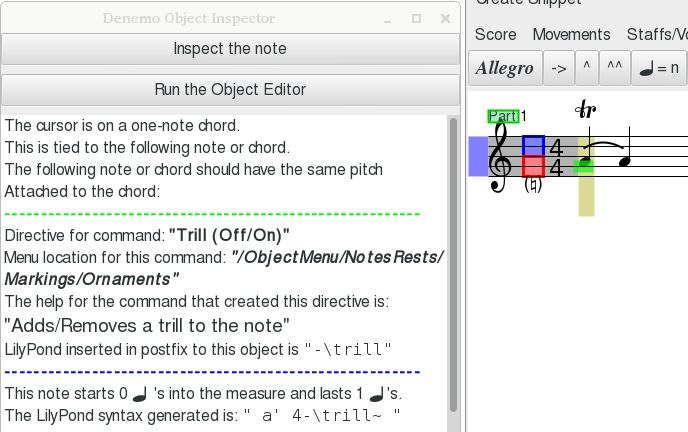
The Object Inspector is shown by clicking View->Object Inspector, or just double-clicking on an object in the Denemo Display. It gives comprehensive information about the object at the cursor. This includes directives like ornaments, dynamic markings, fingerings that may be attached to the object. For objects like notes and rests which start at a particular musical moment it also describes at what moment in the measure the note begins and what its duration is.
The Object Inspector is sensitive to which note of a chord the cursor is on, so that things like fingerings (which can vary from note to note within a chord) are displayed individually as you move the cursor up and down a chord. You can step through the notes of a chord using the button marked “Inspect the next note in chord” which will work upwards through the distinct notes before wrapping round to start at the lowest note. Where a chord has two notes with the same note-name
↓ the button labelled “Alternate note at cursor” can be used to inspect the other one.
For many directives full information about which command created the directive and where it is to be found in the menu system is given, and the description of the command’s behavior.
Some older commands don’t have full information but the tag associated with the directive will help in tracking it down via the Command Center seach facility.
The Object Inspector automatically updates itself as you move the cursor around, so you can leave it open and click on various objects to find out what they are and which command generated them (and so how to modify them).
The “Run the Object Editor” button will launch the
The Object Editor↓ on the current object, which allows you to modify or delete the property you are interested in.
The “Create Button for Clone” button will let you create a palette button that can thereafter be used to insert a duplicate of the object any desired position in the score. This means that a complex marking or a chord with its fingerings, ornaments etc can be created once and then inserted elsewhere, even in other scores by invoking that button.
Use the window controls on the Object Inspector’s title bar to dismiss the window.
11 The Object Editor↓
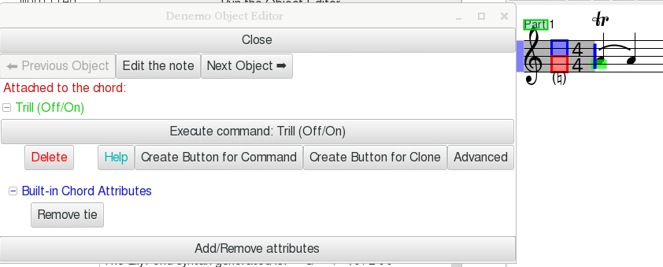
The Object Editor allows you to edit the current Denemo Object and also to create palette buttons for generating such objects.It can be launched from the Edit Menu or from the
The Object Inspector↑.
11.1 Editing Objects and their properties.
This window is modal, that is you cannot interact with Denemo outside of the editor until you have dismissed it. To warn you of this the pointer turns to an X if you try to interact with the Denemo Input Display when the Object Editor is still open. Buttons are provided to move on to editing the next (or previous) object.
As with the Object Inspector the Object Editor is sensitive to the cursor height, with the same navigation control (“Next note in chord
↓”) to move through the notes of a chord so as to allow editing the detail of each note. Where a chord has two notes with the same note-name
↓ the button labelled “Alternate note” can be used to edit the other one.
In the example the cursor is on a chord which has a trill on it. Within the chord it is on the note C-natural which has a fingering on it for finger 3. These are the Denemo Directives attached to the chord and note - there can be even more.
For each Denemo Directive (either standalone or attached to the chord or note) there is a button “Execute command: <name of command>”. This button will run the command in edit mode - if it has one - or simply run the command if it doesn’t.
Below this is a row of buttons - the first will delete the Denemo Directive, while the last (Advanced) allows a low-level edit. The rest of the buttons are described next
11.1.1 Seeking↓↓, Editing and Conditionals
The next three buttons allow you to seek and edit further occurrences of this particular Denemo Directive in the score (“Next”) to set conditional behavior on the Denemo Directive (“Conditional
↓”) or to get the description of the command that originated this directive (“Help”).
The “Next->” button allows you to search on from the cursor for further occurrences of the Denemo Directive - other fingerings for button on the Fingering directive, for example. When found they can be edited and the search resumed (the usual shortcut for resuming the search is Ctrl-E,r). These search commands can be invoked from the Edit menu, but this button provides a convenient start point.
The “Conditional” button allows you to say if you want the directive to be ignored for certain
score layouts 14↓. For example, a cue is usually only wanted when printing the part, not the full score. So clicking on this allows you to specify this.
11.1.2 Making the Directive Conditional
The conditional button allows you to designate certain score layouts (e.g. typesetting just one part, or one movement) as ones for which this directive is active or ones which ignore the directive. So if the full score is wanted without fingerings then by clicking this button with the full score as the currently typeset layout the fingering directive can be designated as ignored by that layout. Further examples can be searched and similarly marked in the dialog that follows.
11.1.3 Making a Copy of the Directive
This button copies the directive to the clipboard - it can then be pasted by moving the cursor elsewhere and invoking the paste command.
11.1.4 Creating Palette Buttons for Objects and Properties.
The Object Editor also has buttons for creating Palette Buttons for the Denemo Directive that it edits. There are two of these: one button would run the command that created the attribute/object the other will instantiate a duplicate - a clone - of the attribute/object.
Create Button for Command
This creates a palette button to run the command that created the Denemo Directive you have Object Editor open on. You are asked which palette you want to place the button in, and can create a new, custom, palette at that stage.
For example, if you use this on the Arranger attribute of a score you will get a button that runs the command Arranger (which is found in Score->Titles...). That button would then ask you to fill in the name of the arranger. Compare this with the next button, where you will create a button that will install a clone of Arranger attribute that you have on this score - the arranger will be already filled in, saving you having to enter your own name each time you create a new score.
Create Button for Clone
This creates a button which when clicked will insert a duplicate of the Denemo Directive that the Object Editor is looking at.
This means that for any specific attribute you want to re-use you can create a button that will install exactly that Denemo Directive at the cursor. So, even if you do not know how a particular effect was generated, you can create a palette button to use the effect in your own score. The Open->Open Example scores provide useful examples of things you may need. See the section on Palettes
4↑ for more about palettes.
This button is particularly useful for things like your copyright notice which stays the same from score to score - you just need a clone to install on a new score.
12 The Score and Movement↓ Properties Editor
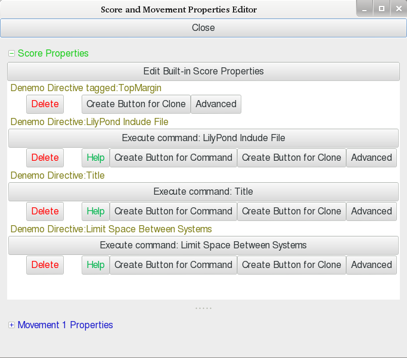
The score and movement editors allow you to edit global properties of the score or current movement. Use the Score menu to launch the editor with the Score properties expanded fully and the Movement menu to launch it with the Movement properties expanded - they are combined in a single window to make it easy to switch between them. Drag the separator if you need to switch between them. On the Movement Editor pane there are buttons to change movement, so you can continue editing without re-starting the editor.
The built-in staff properties can be edited using the button at the top. For each Denemo Directive attached to the staff or voice there is a button “Edit command: <name of command>” - the tooltip of this button gives the help text of the command that created it. This button will run the command in edit mode. There are also buttons to do a low-level edit or to delete the directive.
Some older commands do not have edit facilities.
As with the Object Editor
11↑, this editor is
modal.
In addition to the buttons described for the Object Editor
11↑there is a button to create a duplicate
↓ of the directive. The purpose of this is to have two versions of some setting (e.g. the indent for the first staff) which are used for different score layouts - a full score may require a larger indent than an individual part. If you make the duplicate conditional
↓ on one layout, then it is good practice to make the original conditionally
ignored by the same layout, rather than relying on it overriding the earlier directive.
Note that the command that created the directive you have duplicated will only edit the original directive, not the duplicate. So if you want to change it you can either use the Advanced edit button or delete and re-create it with the different value desired. (And then return to the value desired for the original copy of the directive).
13 The Staff↓ and Voice↓ Properties Editor ↓
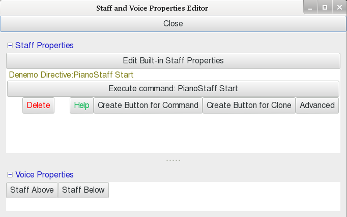
A “tools” icon is drawn at the start of the staff. Clicking on this opens the Staff and Voice Properties Editor. As with the Score and Movement Properties editor these are combined as two panes in one window - often you won’t be sure if the property is one set on the Staff or the Voice belonging to the staff, so this makes it easy to look at both. Drag the separator if you need to make more space for one of them.
You can also launch the Staff Properties Editor from the Staff menu, and you can navigate the staffs while in the editor using Staff Above and Staff below buttons.
The built-in staff properties can be edited using the next button - this is a rather arbitrary collection of things that are not attached as Denemo Directives, covering MIDI output for the staff, some typesetting controls and display controls.
There are also buttons to inspect/alter the initial clef
↓, time signature
↓ and key signature
↓.
For each Denemo Directive attached to the staff or voice there is a button “Edit command: <name of command>” - the tooltip of this button gives the help text of the command that created it. This button will run the command in edit mode. There are also buttons to create palette buttons, low-level edit or to delete the directive as with the other editors.
If the staff has properties attached to the key signature or time signature then these are included after those attached to the staff itself. As before the command that generated them can be run in edit mode.
Some older commands do not have edit facilities.
Note that if there are additional voices on a staff these are usually displayed on a separate staff for ease of editing. Only the voice properties should be set on such a “staff”, the staff properties will be ignored (since the voice will be typeset on the staff above).
As with the Object Editor
11↑, this editor is
modal, and as with the Score/Movements and Staff/Voices editors there are facilities to make duplicate directives for conditional
↓ use in the various layouts you may need.
14 The Score Layouts↓ Window
Score Layouts are ways of typesetting a score for different purposes. Even without ever looking at the score layouts window you may find that you have been using them all along. For example, if you print just one part from a chamber work, or the vocal part from a song with piano accompaniment a score layout is created for this. In fact, layouts are always created when you typeset music - for example from the Print Window Typeset, Part or Movement buttons, or from the Print menu. These are default score layouts they are created automatically, and you don’t have to think about them. However, if you want the music to be printed slightly differently for a part than for the full score then you can look at the Score Layouts window to see which is the current score layout (it is the last one that was typeset, unless you have selected another one since).
In addition to default score layouts some commands in the Print menu generate custom score layouts - for example a layout for the accompanist to play from, with the solo part printed on a smaller staff.
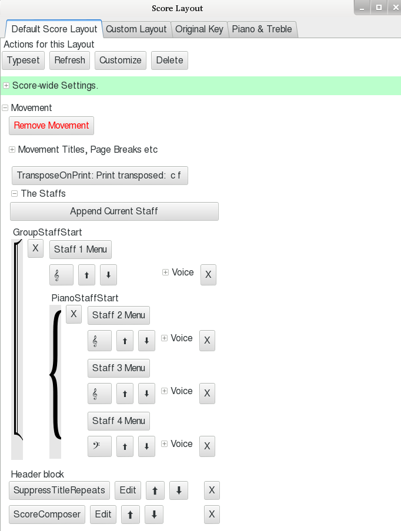
The score layouts window is shown by checking View->Score Layout.
You can create custom layouts to print the music in different ways. For example, one layout may have the score transposed, or be for just two parts printed together. You start from a default layout, setting the values you want, and then click the Customize button.
You can customize any layout in this window - positioning lyrics above the staff rather than below for example, or setting the staff groupings. You can add any staff to any movement in the layout using the “Append Current Staff” button (place the cursor in the staff you wish to append). The buttons marked X next to the staffs delete. You can also append whole movements and re-arrange the order of the movements using the additional buttons that appear once you have made the layout a customized layout.
As well as appending staffs you can substitute the music for any specific voice
↓ by clicking on the “Substitute” button that appears when you expand the voice details.
Although all score layouts have access to the same music to arrange on the score the music can contain features that are exclusive to a one layout or exclude one layout, by making Denemo Directives conditional on the layout being typeset. See the commands under Directives->Make a Directive Conditional or Notes/Rests->Make a Directive Conditional for this, or use the Conditional button in the Object Editor
11↑.
The score layout can only be edited graphically when first created. Once re-loaded from disk it is reduced to its LilyPond text form and can then only be edited in the LilyPond view.
15 Preferences↓ Dialog
Under the Edit menu is a command to invoke the preferences dialog.
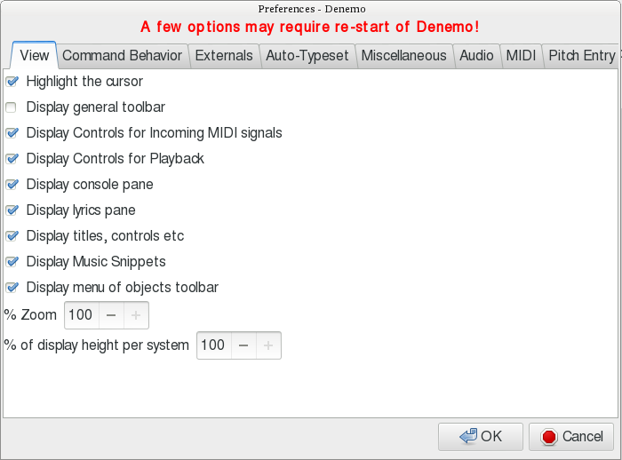
This is arranged in tabs for the different aspects that you can set.
15.1 The View Tab
The values set via the View menu are mostly persistent and so don’t need to be set here, they can be set via the View menu. There is a setting in the miscellaneous tab for this persistence property.
15.2 The Command Tab
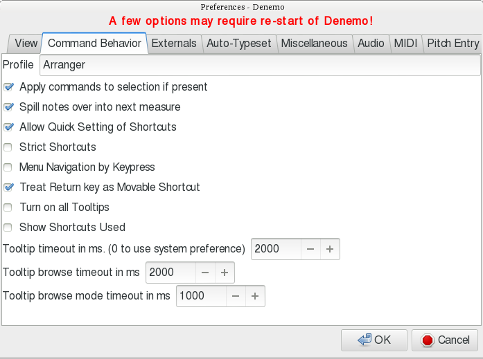
Here are options for how commands should be treated. The can apply to the note at the cursor or the whole selection. A note entered that does not fit in the bar can be split or not. Shortcuts can be set just by highlighting the command and pressing the key, or not. Menu navigation with arrow keys can be allowed (otherwise you would be setting the arrow keys as shortcuts). The Return key can be moved easily from command to command as a shortcut, or not. The “newbie” mode can be turned on - useful if you start to use a section of the program that is new to you. A window can be popped up to tell you which keypress you invoked. And finally the timing of the tooltips as you hover and move from one menu to another can be controlled.
15.3 The Externals Tab
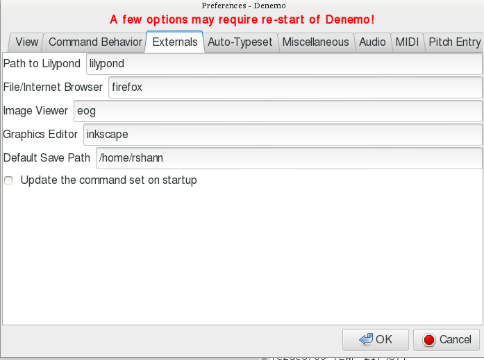
Here you can set the paths to external programs that you can use from Denemo. Binary packages have these set already, but if you wish to use a particular version of LilyPond or some other program to browse the manual then you will need to enter the name (preferably the full path) of the program concerned.
You can also set the default location for saving your scores. The update command set feature is not available at present.
15.4 The Auto-Typeset Tab
This tab controls the continuous typesetting feature of the Print View
7↑. Most of these can be set via the Continuous/Manual button in the Print View window, but here you can control how quickly Denemo checks for the need for a new typeset.
15.5 The Miscellaneous Tab
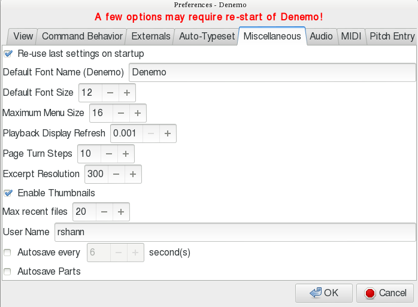
The font used by Denemo for menus and dialogs tooltips etc can be set here: the default is a special font that makes it easy to read the musical signs - most fonts create 1/2 and 1/4 notes that are not easy to distinguish at a glance, the ones in the Denemo font are cartoon-like exagerations that make it easy to see what is meant. You can set the font size too - none of this affects the typeset score, naturally. Some menus that can become very large can be limited (a “more” button appears).
The display animation controls are here - how quickly the display refreshes and how page turns are done in the Page View
3.1.1↑.
The excerpt resolution setting is to control the quality of the image created by the Print Excerpt command (printing little bits of music for inclusion in documents).
Denemo can create thumbnails from the actual typeset music (done on closing the session or by a command) - these are displayed by file browsers (not on windows o/s though).
Denemo keeps a list of scores you have visited recently - how many is controlled here. Use Open->Open Recent to choose one from the main menu.
The user name is set for visiting the denemo chat room via the Help menu.
The Autosave options guard against a power failure while you are working - nowadays you can set the time very short without noticeably impacting your work.
15.6 The Audio↓ Tab
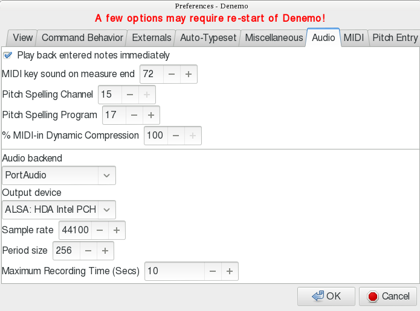
This tab affects the sounds you will hear via a connected audio system. The first section is for feedback when entering music. If you are looking at a source manuscript while entering rhythms or notes you will not want to look across at the input display to check that you are still entering at the right part of the bar. The sound effect that tells you a new bar is beginning is set via the first field - it is one of the drum effects available in the default Denemo soundfont, number 72, change this to 0 to turn it off, or other values for a more discrete sound.
There are settings for controlling the pitch spelling
↓ for MIDI in - augmented and diminished intervals switch to this channel; if you hear this on an interval that was not supposed to be augmented or diminished you are alerted that you have the enharmonic range wrongly set for the piece. You can set this to the instrument in use to avoid the effect.
The Dynamic Compression affects the volume at which notes are played back as you enter them from a MIDI keyboard - by compressing 100% you avoid meaningless variations in volume - you are only entering notes, not giving a moving performance, after all! Without this you will find some notes are too quiet to be noticed and will think the note wasn’t registered. Note that the value 99 for dynamic compression is a “magic” value, it gives a slight after-touch effect, useful for percussive instruments (disatrous for organs!) to avoid the clipped sound when the note terminates.
The Audio Backend section changes where Denemo tries to send the output sounds to - it can be difficult to match up the options to the hardware (and o/s) settings you have. After checking carefully that you have got speakers attached and that they are working (e.g. by running some other program) you should turn off all other programs that may be hogging the audio out and then start up Denemo and only resort to changing the settings here if you don’t hear anything. Be especially careful not to alter the Sample Rate and Period Size unless you are an audio expert.
The Maximum Recording Time is there to limit the amount of memory you gobble up if you turn on the Record
3.4↑ of the audio out.
15.7 The MIDI↓ tab
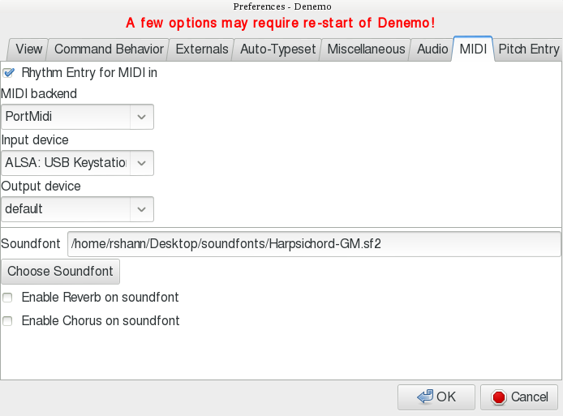
Here are the controls for a connected MIDI controller
↓ (usually a keyboard nowadays). With Rhythm Entry checked you can type in unpitched rhythms and immediately fill them in from the MIDI keyboard
20.2↓. The MIDI backend section lets you specify the controller you are using - set this even if “default” works. The MIDI output device is currently not used in Denemo.
The soundfont is the set of sounds you hear - Denemo is shipped with a smallish soundfont, but if you want something special then you can browse to the .sf2 file using the Choose Soundfont button.
The Pitch Entry tab is for acoustic entry of notes - this is largely replaced by MIDI keyboard entry now that MIDI keyboards can be bought very cheaply.
16 Score and Movement Button Bars
The View->Titles, Buttons etc checkbox makes two horizontal button bars visible (if they have buttons on them). What the buttons show are titles/composer etc for the score and for the current movement. The score button bar holds the movement indicator buttons for scores that have several movements - you can click on one of these to move quickly to a different movement. In addition other score-wide settings create buttons on the score titles bar and movement wide settings on the movement titles bar. The menu items that populate these are under Score->Titles etc., and Movement->Titles etc and other menus.
17 Style, Layout, Titling↓
This section covers where to find commands for titles, page numbering, table of contents, critical commentary, page size and so on. The commands for stylistic directives are in the Score->Typesetter or Movements->Typesetter menus. Here you find commands to set the accidental style (when should accidentals be repeated?) and bar numbering styles, Rehearsal Mark style, page numbering conventions, the fonts to use for the various elements of the score.
In this directory there are commands to control the number of systems per page or bars per system - these would only be needed in exceptional circumstances. There are also commands to control how systems are laid out on the page, and on the last page (the Ragged * commands), and to control the margins.
Notehead style for the whole score is here (see the Notes/Rests->Notehead menu for individual notes) and a command for creating a custom barline
↓ style which can then be used in the score.
The command to instruct the typesetter to transpose the entire score is here - two flavors, a quick text-based one or one that allows you to specify the transposition you require by setting the pitches of two notes (from and to pitches).
Titles menus are found in the Score and Movements menus. There are two styles of titles, Book Titles and Simple Titles which shouldn’t be mixed.
17.1 Simple Titles
Simple titles allow you to place fields of text around the music. In this example the fields have been named “xxx movement” when they have been set from the movement titles otherwise they have been set in the score titles menu.
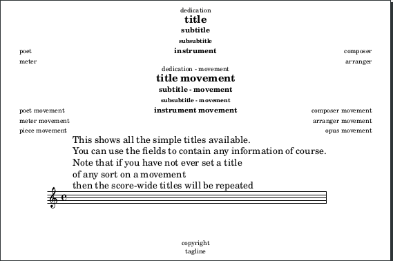
Each field can contain any text you need, with the Copyright field at the bottom of the first page, the Tagline field at the bottom of the last page and the Instrument field at the top of each page.
When you first set a title you just get a text box to write the title in. If you invoke the title again (e.g. click on it in the Print View) then you can extensively alter its appearance using the LilyPond markup language - buttons are provided so that you do not need to know the markup syntax. See the section
19.9.2↓ for the interface provided.
If you have several movements without titles and then set a title for the score, that title will be repeated for each movement until you set at least one title field on the movements.
When you preview the title with the preview button you see the title relative to the default settings for that title - in particular if that title is normally bold and you want to turn this off you will need to use \normal-text before the text to be un-boldened.
17.2 Book Titles
With Book Titles you get a title page with a border and then each movement can have titles of its own.
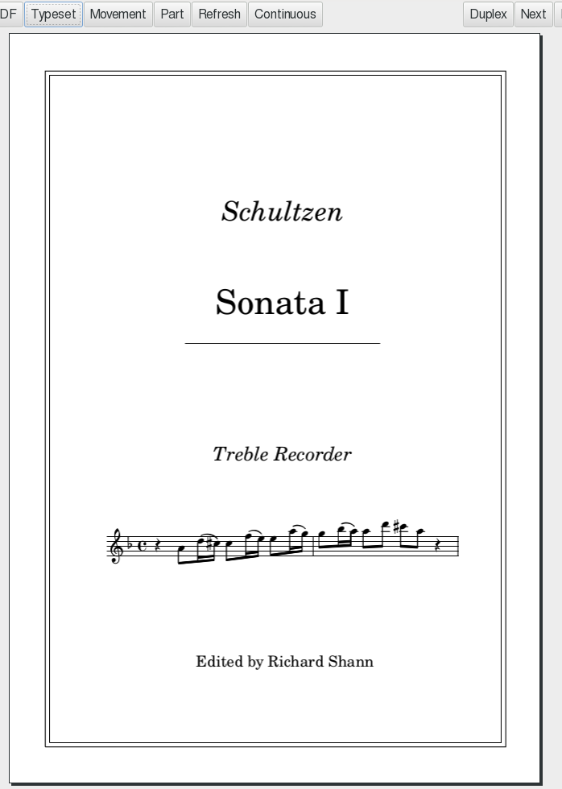
The music that appears on the title page can be selected from anywhere in the score, or omitted.
The Score->Titles->Book Titles menu also includes table of contents and critical commentary control.
18 Lyrics↓
Vocal music can be typeset using the commands in the Lyrics menu.
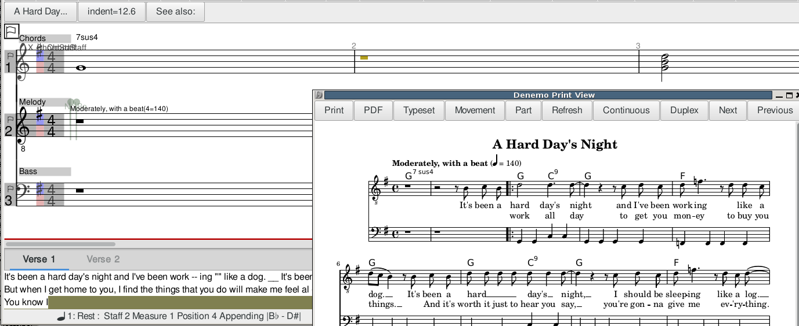
18.2.1 Overview of Lyrics
Lyrics in Denemo are handled as verses of text. The screenshot shows a piece with two lyric verses.
For each verse a tab appears in the lyric pane at the bottom of the main window. The tab is a simple text editor - a new one appears each time you execute Add Lyric Verse (Ctrl-l, a). The syllables are not attached to the notes, so you can edit the notes freely without affecting the lyrics.
Note that the lyrics for a staff are only shown when the cursor is in the staff concerned.
This means that you will see the lyrics for the current staff disappear from the Display Window when you switch staffs, which can be disconcerting, but saves space in the display.
While typing or pasting the text in will be enough for simple pieces, special syntax can be included for more complex tasks, in particular space, hyphen(-), underscore (_), tilde (~) all have a special meaning as explained below.
Extra spaces and new lines can be used freely without affecting how the syllables are placed under the notes. For full technical detail you can consult the LilyPond documentation, but the guidance below covers many needs.
Special syntax beginning with a backslash “\” should be on a line by itself or at the end of a line, so that Denemo knows not to display it under the notes of the display.
The Lyric pane shows only a few lines initially, but you can drag it upwards if you need to see more or use the scroll bars at the side.
You may find it tricky to catch the “sweet spot” where the lyrics pane can be dragged open, sometimes dragging the red bar at the bottom of the Denemo Display upwards helps - it can be returned to the bottom afterwards.
Lyrics are entered as a syllables separated by spaces or new lines (which have no other meaning). The full possible syntax is given in the LilyPond documentation, but Denemo provides you with menu items for inserting the most useful extras such as stanza numbers, font selection and skips.
You can switch to the lyrics pane from the notes with Ctrl-l, Ctrl-l. The verse changes background color to show that keystrokes will now edit the lyrics. And you can switch back from editing the lyrics to editing the music with the Ctrl-l (or Esc or Tab keys). You can change verses with Ctrl-PgUpl/PgDn keys and change staffs with Ctrl-up/down, and save with Ctrl-s.
While editing the notes the command “Edit Lyric at Cursor” (Ctrl-l, Ctrl-l) finds the place in the lyrics corresponding to the cursor position allowing you to immediately start editing the syllable that underlies the current note.
18.2.2 Special Syntax for Lyric Verses
This section explains the special syntax that the commands in the Lyrics menu insert into the verse to control which syllables fall under which notes and other special effects. When you have used the commands in the Lyrics menu once (to remind yourself) you can simply type the special syntax when you need it again, saving time messing with the mouse.
In this section we’ll indicate the syntax inserted by putting it in “” - the double quotes not being part of the syntax.
Grouping several words under one note:
Lyrics->Lyrics Tie will insert a single underscore “_” or “~” tilde, which will typeset as space or lyric tie “ˬ”respectively.
An alternative to the underscore is to enclose the words in double-quotes, e.g. “word1 word2 word3”, where the double quotes are literally typed in.
Extending a syllable over several notes (Melisma) can be indicated by placing a slur over the notes (a phrasing slur does not trigger melisma).
Beaming can also be used to indicate Melisma (e.g. in choral music). This can be done by turning off automatic beaming and manually beaming those notes that have a single syllable. However, the Denemo Display will not display the correct underlay of syllables and notes when doing this, instead refer to the Print View (use continuous typesetting).
Lyrics->Melismata->During Word, with Slur
Inserts spaced double hyphen, " — ", into the Lyric pane, typesetting hyphen(s) if needed to the end of the slur
Lyrics->Melismata->Word End, with Slur
Inserts spaced double underscore, " __ ", into the Lyric pane, typesetting a lyric extender to the end of the slur.
Lyrics->Melismata-> During Word, no Slur
Inserts " — _ "into the Lyric pane, spreads the syllable over two notes inserting hyphen(s) if needed.
Lyrics->Melismata->Word End, no Slur
Inserts " __ _ " into the Lyric pane, which spreads the syllable over two notes typesetting a lyric extender.
Lyrics->Melismata->ExtendMelisma,
Inserts " _ " into the Lyric pane, extending the Melisma by one note or group of notes.
Lyrics->DivideSyllables
Inserts “ --” into the Lyric pane, which typesets as a hyphen halfway between the syllables each aligned below adjacent notes.
Skip Syllables in Selection
Inserts special syntax e.g. “\repeat unfold 4 \skip 1” for skipping 4 notes. This is an alternative to typing in a series of pairs of double-quotes, one for each skipped note. Once the syntax is inserted the verse, it may be easily edited, if you have changed the length of the introduction.
Notes Without Words, i.e. gaps in the text, may be produced with a spaced symbol (if one is required) or by a spaced underscore or a pair of double-quotes (“""”) for each wordless note.
LilyPond’s markup syntax can be used in lyric verses as well - prefix with \markup. For example
\markup\box
"boxed words"
will surround the words with a box - as you see a new line (before the actual words to appear under the note) is needed for the Denemo Display to underlay correctly.
19 Musical Elements - everything on and around the notes.
In this section the commands available for the various musical elements are described and their arrangement in the menu system is described.
Commands to control beaming are available for individual notes, whole passages of notes and entire scores. Mostly the default beaming will be what you want. An exception is the beaming in 3/4 time which can look like 6/8 when beamed in the traditional manner. Use Object Menu->Time Signature->Beam at Half Measure to alter the default.
Individual beam control commands are located in Notes/Rests->Beaming. The start/stop beam shortcuts are usually [ and ]. Other commands include providing partial breaks in the beaming and stopping beaming on a note.
Setting beaming for the whole score can be done using ObjectMenu->Score->Typesetter->Set Beaming Rules. Either the general rule can be given, or Beam Exceptions can be set from the selection. To use the latter, set up a measure or measures with the beaming manually set using the Individual beam controls and then select the passage and invoke Set Beaming Rules.
Setting beaming for a passage can be done with ObjectMenu->Time Signatures->Set Beaming Rule. In addition, at a time signature change a beaming rule can be set using ObjectMenu->Time Signatures->Time Signature with Beaming Rule.
After automatic beaming has been turned off use ObjectMenu->Directives->Typesetter->Start Beaming to insert a directive re-starting automatic beaming at the cursor. The Cadenza On/Off commands turn on/off automatic beaming (as well as the timing control).
The important thing to know about barlines in Denemo is that they are not just graphical marks on paper - e.g. you cannot put a repeat end barline followed by a repeat start barline and expect both to print - instead you must use a repeat-end-start barline. This is because you are telling Denemo about the music, not about how to draw it - the repeat-end-start barline is drawn completely differently if it occurs at the end of a line, for instance.
Another useful thing to understand is that the “barlines” that appear in the Denemo display are not really barlines at all, just a convenient breaking up of the music into “chunks”. Normally, of course, you will use one chunk per measure
↓ so they
will correspond with the typeset barlines.
There is a relationship between line/page breaks and barlines: you cannot have line/page breaks at any point in the music, there must be a barline there. However this can be a “hidden” barline, so that option is in the menu too.
One curious consequence of this is what happens if you contrive to input notes that are timed so that a note is always playing at every barline; normally you use tied notes for this, but if (by mistake) you leave one bar short in duration you can find that none of the following typeset bars start with a note, and the result is that the line cannot be broken - it extends off the right hand side of the page.
19.3 Ties↓ and Slurs↓
... and phrasing slurs. It is important to distinguish ties from slurs since they often look the same in the typeset music, but in some circumstances they are typeset differently - so you may think the music looks ok, and later after some editing, it looks wrong - you have hit a situation where the typesetting distinguishes the two. To help with this Denemo shows distinguishes slurs with little green and red markers for the start/end, while the ties are heavier horizontal curves. If you import music from other notation programs they often confuse slurs and ties, so a command to fix these is in the Notes/Rests->Tied Notes menu. (In the unusual case of slurred notes of the same pitch - e.g. open string/stopped note on a violin - you would have to correct the error by hand).
Also in this menu are commands to tie individual notes in chords, to control the direction (up/down) of ties and to adjust the shape of ties which can be very tricky to position nicely in tight situations. Ties at repeats, where the tie goes to/comes from “nothing”, are here too;they are called Laissez Vibrer and Repeat Tie. (Laissez Vibrer has two uses, of course, but it is the same symbol).
The commands for slurs are in the Notes/Rests->Slurs menu. The most useful have the shortcuts 7,8,9 to slur from the current note to the next note, to extend the slur and to reduce it. There are also commands to turn on/off a slur start or slur end, and these are also in the right-click menu on the notes in the Denemo Display.
When entering rhythms with the numeric keypad the slurs can be added without breaking rhythm by using the control key with the rhythm. So, for example, Ctrl-3 enters a 1/8 duration slurring from the previous note, or extending the slur. And Control keypad 9 (Ctrl-KP_9) creates a slurred dotted rhythm (corresponding to keypad 9 which creates a dotted rhythm based on the last entered duration) and similarly Ctrl-KP_7,Ctrl-KP_7 for entering a slurred triplet based on the current duration.
Phrasing slurs are slurs over the top of ordinary slurs, used in Romantic music and later. The display just shows where they start and end, the typesetter allows only one level of nesting slurs as that is all that is used in music. More would require a non-printing voice carrying the extra layers of slurs.
19.4 Triplets and Friends↓
Collectively called “tuplets
↓” these are handled in Denemo by two markers, one beginning the tuplet which holds the timing change and the other a simple end tuplet marker. The Denemo Display only knows how to display tuplets that start and end in the same bar, but the typesetter is not restricted in that way. You can stop and re-start the tuplets at measure breaks so that the Denemo Display understands what you mean, and control the placement of tuplet numbering and tuplet brackets using the Tuplet Brackets and Tuplet Numbering commands in the same menu. The typeset can also cope with nested tuplets perfectly well, though the Denemo Display will be strange.
There are specific commands for the more common tuplets, and arbitrary tuplets can be started using the Arbitrary Tuplet command - you give the numbers to denote the fraction that the timing is changing by (e.g. triplets are 2/3 of the duration written so you give 2,3). If you wanted 7 notes in the time of 4 you would give 4, 7 so that the durations changed by 4/7, after seven 1/8-notes you would have the equivalent of 4 1/8-notes duration.
19.5 Grace Notes↓
Both appogiature and acciacature are supported, as well as inserting pairs of beamed grace notes (other amounts of grace notes should be manually beamed see the section on beaming
19.1↑ ). Grace notes are ignored in the simple playback, use the playback view to hear them.
Grace Notes present a peculiar problem to the LilyPond typesetter that Denemo uses. As they do not have any duration it gets into difficulties if there are other things (such as time signatures, double bars etc) going on at the same time. The problem arises when other parts are also sounding and they don’t have the same grace notes. There is a command in Denemo to work around this by installing “grace note hints” - these are dummy non-printing grace notes in the other parts. This is done automatically by the Check Score routine, so normally you don’t have to run it yourself, but it is in the Notes/Rests->Grace Notes menu. It is good to be aware of this however, as you will see these pale yellow rests that declare themselves to be grace notes in the input music display sometimes.
Notes/Rests->Markings->Ornaments for ornaments attached to notes/chords. Directives->Markings->Ornaments for customized ornaments which appear in the Denemo Display as separate objects before the note they decorate. Besides all the standard ornaments, there are commands to stack accidental signs above/below ornaments and to create customized ornaments, drawn using an external vector graphics editor. One set of custom-built ornaments for French harpsichord ornaments is provided.
Notes/Rests->Markings->Dynamics for dynamic spanners (cresc. dim. etc, both hairpins and textual). Directives->Markings->Dynamics (shortcut Ctrl-d) for dynamic marks (p, sfz etc) they appear as objects in the Denemo Display just before the note they relate to. These dynamics affect both typeset and playback.
In some circumstances it is desirable to place dynamics in a separate Dynamics Line (or Staff). This is often the case for the dynamics centered between piano staffs; it ensure that hairpins align with each other and that other dynamic markings are placed consistently. It also allows for positioning of dynamics markings other than directly on notes - they can be placed at slightly later or earlier times. To do this notes of shorter duration are put in the dynamics staff and the dynamic markings are attached to them. The notes are just dummy notes to indicate the timing of the onset of the dynamic attached.
Sometimes, all parts have the same dynamics. In this case a single Dynamics Line can be placed at the bottom of the system and given a blank part-name. Staffs with blank part-names are printed with every part, so this line of dynamic markings will appear under every part printed with the Print Part
↓ command (or the Part button in the Print View).
19.8 Tempo↓ Markings
Directives->Markings->Tempi and Metronome Marks allows insertion of a tempo change (both typeset and playback). Change of beat is also in this menu.
For simple use Directives->Markings->Textual Annotation command may suffice. This allows you to place some text positioned above or below automatically or as you decide.
19.9.2 Multi-line Text and Music
The most general command is Directives->Markings->Multi-line Text and Music. As the name implies, this is used to create markings that can include new lines, as well as music snippets
6↑, chord symbols, musical signs etc.
The Preview Pane at the top shows the final effect - it is updated as you type and a Preview button is provided if it fails to update.
The new lines can be simply introduced by using the ¶ mark, which is inserted when you press Enter. For more control over new lines and columns you should delete these and use the commands in the Selection menu.
You can not only insert simple text but also control the italic, bold, superscript, font-size etc, as well as inserting actual notated music, fret-diagrams in the sentences. These work by inserting “markup”, that is the text is interspersed with markup commands - \bold, \italic etc - to indicate what appearance is desired. The Insert button gives a menu of things to insert at the text cursor position, while the Selection button gives a menu of commands to alter the text selected. If any particular markup is not in the menu then you can type it in - the markup “\dynamic f” will insert a forte sign by accessing the special font used for dynamics. For other markup commands are available, documented in the LilyPond manual.
Note that the markup commands are generated automatically in a distinctive font, monospaced and bold. This is not essential, but helps to remind you that it is a special syntax, you can just type in the syntax yourself. Take care when editing as errors can make trouble when typesetting: it is essential that the braces {} form pairs, for example.
By right-clicking in the Denemo Display on standalone markup objects you can edit the text and many other aspects of the object, such as how it displays itself in the Denemo Display.
Use Insert->Insert (with value)->Paste Note Name for the insertion of automatically-transposing note names (so that things like B-minor in a title will transpose when the score is transposed) . The Insert menu also allows to insert fret diagrams etc.
As a final check, click Preview before you finish - if it does not typeset correctly edit it again to remove the error or delete it - don’t leave it as you score will not typeset with bad markup in it.
The text when it appears in the final typeset score can be edited via right-click for the position or content. This same interface is also used if you edit the text of titles or the text to show between/after movements (e.g. on a page intentionally left blank
↓), but in these cases the text will be on a single line (unless the Selection->Column and Selection->Line are used to create multi-column/line text explicitly).
19.9.3 Text Spanning
In the Directives->Markings->Spanning Directives->Typesetter>Spanning menus are commands that cause markings that span a passage of music, such as Cadenza and Piano Sustain pedal marks, ottava markings, and extended trill marks. Here also are 1st and 2nd (and nth) time bars, with shortcuts r,1 for starting a first time bar, r,2 starting a second time bar and r,e for ending either. The Nth time bar can be used to hold any text needed (i.e. use this for a first time bar if the indication should be other that 1.).
19.9.4 Rehearsal Marks↓
The Directives->Markings subdirectory also holds the Rehearsal Marks commands. Marks have a special property that they only appear once at the top of the system, even though they can be placed in each part. Theu can be custom text or default, and can be used as bookmark
↓s for navigation. The custom text marks can be edited using the full Multi-Line Text and Music interface.
20 A Survey of the Input Methods
20.1 Introduction
You can set the keyboard shortcut for a command just by pressing the desired key while the menu item is selected. You can right click on the menu item and choose Open Command Center to set a two-key keyboard shortcut. This means that you can tailor Denemo to allow you to use your preferred method of entering notes.
By default, Denemo offers several ways of entering music: typing at the keyboard, playing in via a MIDI keyboard (controller), playing in acoustically using a microphone or choosing items from the menu system.
Typing at the keyboard can be very fast, if you forget which keypress you need you can consult the menu system to find out. This method is good for touch typists.
For entering a lot of already written-out music, playing the music in via a MIDI keyboard or microphone can offer the fastest and most musical method.
With all methods of note entry a measure start sound will be heard when your note entry has moved to a new measure, which means you do not have to look up to know that you have started a new measure as expected. This measure start sound can be set to 0 in the preferences if unwanted.
20.2 Playing Notes into Denemo - MIDI
Denemo can take pitches directly from MIDI input
↓. Select Input->Midi Input. The control panel allows you to choose the enharmonic range
↓, the default centers around the initial key signature
↓ (e.g. E-flat to G-sharp for C-major). If you enter a diminished or augmented interval the note will be played in a separate MIDI channel which can be used to alert you to pitch-spelling
↓ mistakes (e.g. entering A-flat when G-sharp was meant, you will get a lot more augmented and dimished intervals if you have the enharmonic range set wrongly for your piece).
The best way to use the MIDI keyboard is enter the music firstly as pure rhythms using the pc-keyboard, ignoring the note names. The durations show as yellow/brown notes. Each duration makes a distinctive sound as you enter the durations. As you start each measure a sound is made so that you can keep your eyes on the score you are copying from, without needing to look up and check that you haven’t miss-typed. If you are a reading musician you will find that you tap in the rhythm rhythmically which helps to keep your place in the piece you are entering.
Once you have entered the rhythms for one or more measures you can play the notes via MIDI - the cursor automatically goes to the start of the rhythms you have entered. As you play notes in via MIDI they give their pitches to the rhythm you have notated. By this means you can enter a piece of music in the time taken to play it twice - once to give the rhythm and once to give the pitches. If the piece modulates strongly you may need to shift the set of accidentals used to match the score, the pitch spelling facility will alert you to this. (If entering pitches via a mic you need to navigate to the start point, but this isn’t needed for MIDI in).
Under Input->MIDI are various "MIDI filters
↓" that allow you to control how the MIDI input is used: with none active the behavior is as if you had entered the notes using the pc-keyboard, but with the following advantages
-
The octave, accidental and note name are all entered in one press of the MIDI key. The cursor automatically advances so you can continue to play in notes.
-
The duration keys enter the yellow/brown duration-only notes, when you play a MIDI key the cursor automatically moves to the first of these.
-
Holding down the Alt key (or sustain pedal) lets you enter chords.
-
Holding down the Ctrl key lets you check the pitches of a piece already entered. The cursor only advances if the note played is the one at the cursor.
-
Holding down the Shift key lets you listen to the MIDI keyboard without affecting the score.
-
The problem of entering the wrong enharmonic is largely avoided by Denemo’s simple pitch-spelling strategy. The more extreme intervals are played in a separate MIDI channel so that if, for example you enter F - A-sharp it sounds quite distinct from F - B-flat.
20.2.1 The Numeric Keypad↓
The set of keys for entering numerical data that appear on full-sized keyboards make a very useful tool for entering rhythms. Even if you use a laptop without such a numeric keypad it is worth the 5 or 6 dollars/euros/pounds that a separate USB keyboard costs nowadays - it can be blu-tacked to your MIDI controller for easy access.
The default key shortcuts for the numeric keypad are illustrated here:
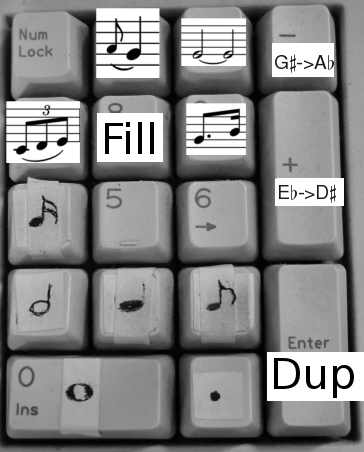
Here I have actually stuck labels with the most used durations and over-drawn an indication of the others. (Keys 5 and 6 do the1/32 and 1/64th notes). The keypad 7 does triplets with a double press (so that it makes three presses for a triplet, e.g. Key 4, Key 7, Key 7 for a triplet of 1/16th notes). The dotted rhythm “dottifies” the current note whatever its duration is. Likewise the grace note key turns the current note into a grace note and the tie key turns tied status off/on for the current note. Keypad 8 fills the rest of the bar with the current note or rest, while Enter duplicates the current bar. The enharmonic shifts
↓ can be pressed repeatedly to shift the set of accidentals to be used sharp-wise of flat-wise, subsequent notes played in will be taken from the new set, which is indicated on the status bar. The duration keys, triplet key and dottify key can all be used with the Control modifier to slur from the previous note.
With this arrangement you can play in the rhythm of a piece in musical time and then play once more with the MIDI keyboard to add the notes (chords require the Alt key or foot pedal). Before you are practiced in this use of the numeric keypad it is a good idea to do just a bar or two, or a line or two at a time, so as not to lose your place.
Some computers don’t respect the numeric keypad’s keys - confusing the Enter with the Return key for example, or treating Shift-2 as arrow-down. Try the numlock key to see if you can persuade it to take you seriously, or look into any key-mapping facility there may be with the machine. And, beware! a separate standalone numeric keypad might seem like a good idea but in fact they are a nuisance, besides being more expensive, as they have things like a 000 key which emits three keypresses at your peril!
20.3 Playing Notes into Denemo - Audio (Soundcard Mic Input)
Denemo can listen for, and detect the pitch of notes on the mic input of the computer; it doesn’t attempt to guess the rhythm - such systems do not work well - but you will find that playing the notes in time will help you to play them in, as well as make playing them in a musical experience rather than a chore.
Playing the notes in can be much quicker than using the keyboard since the note octave and accidental are all given just by playing the note. If you are able to play a musical instrument then this will probably be much faster for you than typing note names, octave shifts and accidentals at the computer keyboard. Using the headphones-out of an electronic keyboard avoids "noises-off" interfering with the pitch detection. Many microphones and pickups benefit from some pre-amplification - it is worth getting the level right before you begin.
When you select the Input->Audio on the Main Menu the Pitch Recognition window pops up. While the mouse pointer is inside the score drawing area the score is sensitive to pitches heard via the microphone input. The background colour of the score changes to show that the notes will be entered into the score.
There are two ways of using the pitch entry - Overlay mode (default) and Insert mode. The button marked Insert causes notes to be entered into the current measure in the prevailing rhythm - the mode is set to Insert for this. The button marked Overlays overlays the notes already present with the pitches you sound. There is a third button, marked Tuning, which is a state-of-the art musical instrument tuner.
Music is entered into the measure which holds the cursor. If you are overlaying a rhythm already entered, then the first un-overlayed note in the measure is overlayed by the note detected. You can delete the overlay using the regular delete keys, or clear them altogether if you want to start over in a measure. If you are in Insert mode then the notes detected will be inserted at the cursor position.
Use the enharmonic shift to select whether Bb or A# should be entered when you enter the given pitch - you can usefully go as far as B# and Fb.
Use the transpose control to shift up or down by octaves.
Most of the other settings would require study of the Aubio documentation to understand, but the one marked threshold may be useful to make the detection less sensitive to ambient noises if using a microphone with an acoustic instrument.
The best set-up is to plug the headphones-out socket of an electronic keyboard into the mic input, and choose a piano setting on the electronic keyboard.
If you don’t have any musical instrument that you can plug directly into the mic in, then you can use an acoustic instrument with a microphone, in which case move your microphone closer or further from your instrument to get reliable detection. Too close and you get double detections, too far and you get missed ones. To check for good detection open a piece of music, set Overlay mode and put the cursor in the first measure and play the piece in – the notes should all turn blue if you have perfect detection. It is worth while getting perfect detection – more than one or two miss-detects per piece of music and you may want to use the Insert rather than the Overlay method.
The Audio Input button introduces a special entry mode where the pitches you play in will overlay the rhythm, appearing as blue notes. You can delete any wrong pitches using the usual delete keys, without deleting the rhythm. In fact if you have an "interloper" (an extra spurious note) you can delete it and the other pitches will all move along to their correct places.
Another method of playing music in acoustically doesn’t involve entering the rhythm separately. For this select Input->Audio and then choose Insert instead of Overlays on the Pitch Recognition Panel that pops up. With Insert the sounded notes are entered as in the prevailing rhythm. The same applies if you have MIDI - by choosing a rhythm (e.g. half-note, quarter-note, or a custom rhythm pattern) and playing in the pitches you can enter the music into a blank score.
20.4 Using the Denemo From the PC keyboard
The default keyboard shortcuts appends a note when you type a number key 0-6 with the pitch taken from the cursor height and inserts a note when pressing a letter key a-g. This provides one way of entering notes - move the cursor up or down to the note position and press a number key for the duration. If the note is to be out-of-key then the equal or minus key can be used to sharpen/double-sharpen/flatten/double-flatten the next note. This method of note entry is probably not the most efficient however: in the Input->PC Keyboard menu you can choose to make the number keys change the prevailing duration without entering a note. With that setting you can use the note names to append notes to the bar only pressing the number keys if the duration changes. The duration can be dotted/double dotted with the period key, and the octave adjusted with comma (for down) or apostrophe (for up).
Mixed mouse and keyboard strategies are possible too. For example with one hand changing the prevailing duration via the keyboard the other can click on the Insert Note buttons in the Note Insertion palette.
The standard keybinding for entering a note in a chord is the
Insert key,
Ctrl-Insert or
Del,
Del deletes. The is inserted at the cursor height, use
- and
+ to flatten/sharpen the note before you enter it (avoiding hearing both notes if you flatten/sharpen afterwards). There are also commands to enter a named note
Alt-a,
Alt-b... are the standard shortcuts for this. When a chord should have two notes on the same line or space
↓ the same keypress can be used to enter it, however selecting which note to edit can be tricky. The easy way is to use the Object Inspector
↓’s “Alternate note at cursor” button to make the note you want accessible for editing.
20.4.3 Editing Music
When not appending music, the letter keys change the note at the cursor to that named note. You need to use the shift key to insert a new note. So Shift-a,Shift-a inserts the note A etc. Plain a edits the note at the cursor to be an A. Likewise with the numeric keypad the Shift key can be used to edit a note duration, while the plain number keys insert the duration of the note at the cursor. (If you do not have a numeric keypad, you have to use the number keys - best to plug in an additional USB keyboard with numeric keypad, they are very cheap nowadays).
Rests are entered with Alt-0 Alt-1 ...
Spacer rests (that is non-printing rests as seen in keyboard polyphony) have shortcuts too Mod4-0 etc, where Mod4 is the key with a flag on it. However, on Windows machines you will need to reclaim the Windows Mod-4 key from Microsoft or re-define the shortcuts, e.g. to Shift-Alt-0 etc or Ctrl-Alt-0.
The Caps Lock can be a nuisance - you will sometimes have it turned on accidentally and wonder why keypress are not working. You can use it to achieve Shift-A, Shift-B ... but it is probably best left alone.
21 Transcribing from Facsimile or Hand-written Score
If you have a PDF
↓ of music you wish to transcribe with Denemo you can display it within Denemo and create links between the source material and your transcrition. This means that when you later review your work you can quickly locate which point in the original manuscript belongs to which point in your transcription. In the screenshot the Print View window is shown on the left with the facsimile on the right. The Print View is a Custom Layout showing the chords both as notation and as chord symbols (as well as the original figures). The blue marker shows the position of the link that was clicked on to open the facsimile at the right place. Note that the piece is also being typeset in a different key - that is just another aspect of this custom layout. Everything - including the chord symbols are automatically adjusted.
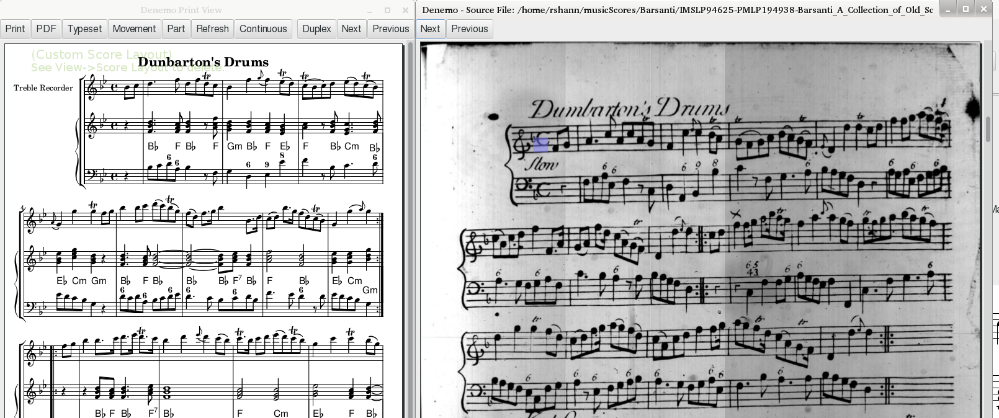
Select the File->Open menu and the item Open a Source for Transcribing. Select the PDF containing the music to be transcribed from. The PDF is opened in a Source View
↓ window. Right-click in this window at the point that your transcription will start. This will create a link - a Denemo Directive Object - in your score at the Denemo cursor position, shown as arrow icon. If you later use a right-click on this Denemo Directive the source file will be re-opened with the blue highlight marker on that point in the score. (Depending on the position of the top of the page you may need to scroll the Source View window up or down to bring it into view).
When you re-open the score to check or edit at some point you can click on a nearby link and the source file will be opened and the position highlighted once again. If you place a link as the very first item on the very first staff of a movement then the link will be automatically opened when the score is opened on that movement.
Note that when Denemo locates a position in the source PDF it always puts the start of the page that holds the location at the top of the window. Use the Previous/Next button to ensure you have the page start at the top before using it to insert links. Note also that the links refer to the page with the zoom value that obtains when you create the link. It will re-open with this same zoom factor. The link will continue to position itself as you zoom, but if you zoom out so far that the space outside the page becomes visible the links will not match until you zoom back.
You can also “mask out” areas of the source view that you don’t want to see while you are transcribing. This is particularly useful if you are transcribing just one part on a multi-part system. You mask out the staffs up to the one you want to follow and the ones from after that up to the same part in the next system and so on. To do this you drag down over the material you want to exclude - it turns gray leaving the part you are interested in easy to see at a glance. You can remove any one of these grayed-out areas - or all of them - by clicking inside them whereon you get a menu of choices.
22 Using a Proof-Read PDF
If you send the PDF
↓ output of your score to someone to proof-read they can make PDF annotations to it. In the File->Open menu choose Open Proof Read PDF to open a proof-read PDF. It will open at the first annotation, and, by clicking on the note the annotation applies to, the annotation is transferred as a comment into the score before the note chosen. When you have done all the annotations on the first page advance to the next page with annotations using the button "Next".
There are limitations - the PDF must be created from your score with point-and-click (the default) and you must not alter the score in a way that would invalidate the point-and-click. (Basically, don’t edit again until the proof-reading is done, always good practice!) Also, enter the annotations in order from the start and don’t edit before you have entered all the annotations, as this could invalidate the point-and-click.
23 Score Setup
Denemo provides different ways to set up scores:
-
Create template with the special name "default.denemo". If this is placed at the top level of your templates directory (that is ~/.denemo/templates/default.denemo), then it will be opened each time you start a new score.
-
Use a Template or Custom Template (See File->Open menu)
-
Create template and save it with the special name "default.denemo" using File->Save->Save Template. This will placed at the top level of your templates directory (that is ~/.denemo/templates/default.denemo), then it will be opened with Ctrl-n the “Open Default Template” command.
-
Use shortcut keys to add staves and set attributes.
-
Use Menus.
-
Create an init.denemo score with everything you want to start up with, and any actions you want to be taken before you begin. This will be opened when you first start Denemo (that is once per Denemo session). See 26.13 on page 1↓ for details on what actions you can have Denemo perform before you start.
23.1 Using Templates↓ to Setup Scores
Denemo comes with a few preinstalled templates. You can also create your own templates as well, in fact you can use any Denemo file as a template, just open it using File->Open->Open Custom Template. (The only difference is that, opened this way, the score is a new i.e. untitled score)
-
Navigate to File, Open Template. The Open dialog box appears.
-
Double click on a template name from the list of templates. The dialog box closes and the template appears.
-
Adjust the clef, key and time signatures as needed.
24 More Features
24.1 Transposition↓
Denemo has much better transposition facilities than the common music notation programs such as Sibelius, Finale and Musescore. If you have used those programs you are probably thinking “I need to transpose this music”, meaning you are going to change all the notes and chords you have entered along with the key signatures. You
can do this in Denemo (see Physical Transposition
24.1.1↓) but usually it is far better just to say that you want score to be typeset in the new key. This takes care of everything in one go - even footnotes that refer to the pitches of notes in the music will transpose (unless you have entered them as fixed values). And your input music stays looking just as you entered it - essential if you have to look back and compare with a source for instance.
The commands to transpose a score are in the Score->Typesetter menu. “Transpose on Print” is a graphical user interface - you get presented with a new tab containing two notes - clicking the Transpose button will transpose so that the first pitch will be typeset as the second one. The initial values a C and E♭ (up a minor third) so by typing G this would become up a fifth. The first note could be changed as well, if you know that D should become F♯, for example, then you can make those the two notes.
The other command is quicker but more technical - (Print) Transposed lets you type in the names of the two notes. The technical bit is how you specify sharp and flat and which octave. To specify sharp the note is followed by “is”, for flat “es” (these are actually the Dutch names!). Octaves are indicated by ’ for up and , for down, so for example c c,, would mean transpose two octaves down.
24.1.1 Physical Transposition
In the case where you have changed your mind and want the actual notes you have entered to be altered the commands to do this are in the Notes/Rests->Transpose menu. The most general of the commands are Arbitrary Transpose Down and Arbitrary Transpose Up. These allow you to describe the interval you want to transpose the music by e.g. m7 for a minor seventh, d5 for diminished 5th. Alternatively you can use two pitches to describe the interval as in the previous section. Note that these commands work on the note/chord at the cursor or the selection; any key signatures will need changing separately if needed.
24.2 Search and “Replace”↓
There are two categories of search available in Denemo. The first is in Navigation->Seek menu and the other is in the Edit menu.
In Navigation->Seek is the command to find a selected rhythmic pattern (Ctrl-f, Ctrl-f) - that is to find a sequence of notes with the same rhythms as those of the selection. Once found the pattern can be edited, either manually or by executing a series of steps recorded in the Scheme window (see section
25.2.1↓). There is also a command to find to find a sequence of selected notes. In both these cases the search can be resumed by executing the command with no selection.
The second sort of search is in the Edit menu (and also available from the Object Editor). Ctrl-e,e starts a search for objects of the type that the cursor is on, while Ctrl-e, Ctrl-e offers all the types of object in the movement and allows you to select which to search for. Ctrl-e,r resumes the search. When found the object can be manually edited, deleted or modified using recorded commands as described above. The search order is column-wise, that is everything at the same musical moment is searched and then the next musical moment is searched from the top staff downwards. When the end of movement is reached you can wrap to the start of the movement or move to the next movement or wrap round to the first movement.
24.3 Piano Staffs, Orchestral Scores etc
A piano staff can be added using the Staff->Add Staff menu (or by adding the Piano instrument from the Staff->Add Staff->Add Staff for Instrument command). In addition, piano staffs, and staff groups such as choir staff can be created using the Staff Groupings menu under the staff menu. You can set a piano staff within a staff group by setting successively the StartPiano and StartGroup contexts on a single staff, or more generally setting StartPiano, EndPiano on adjacent staffs within a staff group.
24.4 Single Staff Polyphony↓
Use the Staffs/Voice
↓s->Voices menu for placing more than one voice on a staff. You can set the initial voice number from this menu (voices 1 and 3 are stem up with slurs and ties etc adjusting to suit, voices 2 and 4 are stem down). Directives can be placed in the music to change voice, see Directives->Typesetter->Voices menu.
You will also need spacer rests for voices that are silent, and commands to displace rests vertically and horizontally (see Notes/Rests->Rest Insertion menu), and commands from the Voices menu under the Staffs/Voices and Directives->Typesetter menus.
24.5 Entering Figured Bass↓
To enter figures choose Notes/Rests->Markings->Figured Bass. There are some shortcuts that enable all the work to be done with the numeric keypad. A brief summary is given by right clicking the option. The conventions are described in the LilyPond docs.
There is also a MIDI filter for entering figured bass in the Input->MIDI menu. With this you play the bass note at the cursor and then the notes that the figures are indicating; on releasing the bass note the figures are entered for that bass note. The footpedal allows a sequence of figures to be entered on one note and also to enter extenders.
24.6 Fret Diagrams↓
Fret Diagrams can be placed on the score using the command Fret Diagram in the ObjectMenu->Directives->Markings menu In addition by assigning a Denemo staff to display as fret diagrams, chords can be entered in standard notation which will then be dislayed as fret diagrams. See ObjectMenu->StaffMenu->StaffPropertiesMenu->FretDiagrams for this.
Music can be displayed in tablature - the default is for standard guitar tuning but others can be set. The menus to explore are:
ObjectMenu->StaffMenu->StaffPropertiesMenu->Tablature
ObjectMenu->Directives->Typesetter->Tablature
It is possible to display the same music as both notation and tablature, and example of how to do this will be found under File->Open->Open Example.
24.8 Entering Chord Symbols↓
There are two quite different ways to enter chord symbols (also known as Chord Names
↓, Fake Chords). If the chord changes do not happen mid-way through notes then you can use Notes/Rests->Markings->Chord Symbols to attach chord symbols to the notes themselves. A brief summary is given by right clicking the option. The conventions are described in the LilyPond documentation.
An alternative is to set a staff to display not the chords in regular notation but the chord symbol that represents the chord. Create a staff and use Staff->Staff Properties->Chord Symbols. Then this case you enter actual chords which will be displayed as Chord Symbols. The duration of the chords will determine the positioning, enabling chord changes mid-note. The chord symbols can then be arranged above or below the melody or other representation of the piece using Staffs->Swap Staffs or creating a custom layout in the Score Layout window.
A palette is available
4.5↑ for inserting chords, with this palette selected the key sequence
pm7<Enter>, for instance, will insert/append a c, e-flat, g, b-flat chord if the cursor height is on a C, (or c-sharp, e, g-sharp, b if there is a pending sharp
↓).
Chord Charts can also be created - there is a Chord Charts palette for these. Compact chord charts require a patch to LilyPond - enquire on the mailing list for this.
25 Customizing Denemo
25.1 Adding and Editing Key/Mouse Shortcuts
Denemo allows you to choose which keys activate which commands (shortcuts). It also allows you to choose Mouse press/release gestures (in combination with keys such as Shift, NumLock, CapsLock etc).
See
The Command Center↑ for setting shortcuts. The following quicker method can also be used for one-key shortcuts. To choose a shortcut for a menu item, select the item (it becomes highlighted) and press the key that you want to become the shortcut. If your choice of keyboard shortcut already belongs to another command, you are warned about this, and given the chance to change your mind or steal the shortcut. Also, you can choose whether to distinguish between keypresses with, say the
NumLock down and those without or to ignore it. If the
NumLock is set but no command for that key specifically requires it then the setting of
NumLock is ignored and the keypress is treated as if the
NumLock was off.
The menu item that activates the command shows the shortcuts that exist in bright blue lettering. PrsL-CapsLoc, for example, is the Press action on the Left mouse key while the CapsLock light is on. In the default command set this is linked to the BeginSlur command, so that together with the RlsL-CapsLoc for the release of the left mouse button, you can "draw" slurs by using the mouse. Similarly, Shift with left mouse button (MveL-Shift) is set to allow you to drag notes up and down the staff. (This is using Command MoveNoteToCursor).
For mouse shortcuts invoke the Command Center with the right click on the menu item. The Set Mouse Shortcut Dialog requires you to set which button and action you want to use and then to hold/lock the keyboard modifier while clicking on the big button. The setting you have chosen is shown, and you click ok to accept it.
Mouse Shortcuts are tricky to set - you are able to control what happens on mouse button press and release, which can be used to do things like drag notes up and down. But they are tricky to set up!
25.2 More Commands
Adding More Features
It is possible to add more commands to the set that Denemo ships with. Some of these are shipped with Denemo, but not added automatically so as to keep the menu sizes manageable. Generally, you right-click to find more menu items to add; once added you can set a keyboard/mouse shortcut and keep the command in your default setup. Scheme to be executed at startup can be placed in the denemo.scm file.
An example - quicker dynamics selection
It can be slow to choose dynamics (Ctrl-D) because the list is quite long to move down (or move to the mouse). You can define a list of the dynamics you actually want to be readily available as for example: (define DenemoDynamicList ’(("f" "127" "Forte") ("p" "127" "Piano"))) This makes forte available just by pressing Return and piano available by pressing down arrow Return. (The others via More of course). If you place this in (home directory)/.denemo-x.x.x/actions/denemo.scm then it will be defined when you start Denemo.
25.2.1 Recording a Denemo Macro
You can record a frequently used sequence of actions into the Scheme window. These can be used in search and replace operations or they can be installed as a command in the menu system and given a keyboard shortcut or placed in a palette.
To do this choose View->Scheme Script. (You do not have to understand what a Scheme Script is to use this!) In the window that pops up check Record Scheme Script and then do the set of steps you wish Denemo to record. As you execute each command the Scheme window gets that command added to it.
For example, suppose you wanted to place a trill on a particular note in a certain rhythmic pattern that occurs frequently in a piece. You would record the cursor moves and the Trill command needed to edit the pattern concerned and then use the Search and “Replace” facility to seek the pattern you needed selecting “Continue” or “Execute Scheme” as each pattern is found.
Or, suppose you wanted a command to delete the next note (there are commands to delete the previous note and the current note, so why not?). You would enter some notes, put on Record Scheme Script and then move the cursor right two steps and delete the previous note (with Backspace if that is your shortcut). (Each time you use a command you will see the Scheme syntax for that command entered into the Scheme window). Now turn off Record Scheme Script and you can experiment with your new command by pressing Execute in the Scheme Script window. To save this new command for future use, you right click on a menu item (in the menu where you would like the command to appear) and choose "Save Script as New Menu Item", this will ask you to make up a name for your new command as well as a label for the menu item etc.
You can save the command in your default sequence of commands (via Edit->Customize Commands...->Manage Command Set->Save as Default Command Set). If not you will be asked if you want to save your new commands when you exit. Otherwise you can re-load via the More->My Commands menu item.
Turn off the Record before starting the search and replace, otherwise the search and replace command itself will be recorded. Delete the recorded commands before saving your score, unless you want it to be executed each time you open the score. (See the section Musical Scores that do things!
25.2.2 Editing a LilyPond↓ Tweak
There is another way of adding your own favorite LilyPond tweaks, which is by modifying a tweak that has already been done. This can be done by using the text-edit dialog on an existing Denemo Directive (usually found under the Advanced button provided in the Object Editor
11↑). Here you can see the actual LilyPond text that will be inserted, and there is a button to create a script to generate whatever you choose to enter. You can also enter the name of graphic images (.png files) that are to be used to represent your item in the display, and say where it should be positioned.
Once you have created the script, it can be saved in the menu system by right clicking on an item in the menu where you want to place the command, and choosing "Save Script as New Menu Item" as above. An alternative to creating a command in the menu system is to create a palette button (see the Object Editor
11↑).
26 Writing Scheme↓ Scripts
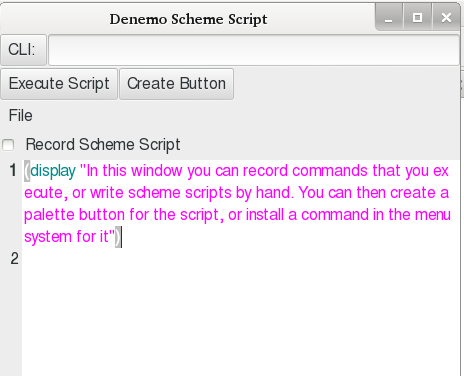
If you are a programmer you will have guessed that you can edit the Scheme Script window to create any command you want. Even if you are not familiar with Scheme you may find that you can adapt other scripts to do what you want.
A good example of this is a script to insert a particular LilyPond directive into the score. This is all that many scripts do: it is easy to see the piece of LilyPond in the Scheme Script window, and by changing it you can create a new command.
For example, from the More menu select the command /menus/ObjectMenu/Instruments/Orchestral/RehearsalMark (the files are laid out in folders/directories in the same way as the menu system itself). Then choose Get Script into Scheme Window from the right click menu. With this command its script is appended to the Scheme Script window. Here you can see the part that says
(d − DirectivePut − standalone − postfix"RehearsalMark""
mark
default")
which is inserting the LilyPond directive "\mark \default" which inserts the default rehearsal mark. (The extra backslashes are needed to tell Scheme that you literally mean a \ sign). You can change this to insert any other LilyPond that you need - always doubling the \ signs. Then you can save as a new menu item, a palette button, or use Save Script from Scheme Window to customize the command you started with.
More ambitious programmers will need to know all the commands available. Besides the complete Denemo command set (the list is given in the Command Center window) there are the following additional Scheme procedures defined (see the files actions/denemo.scm and actions/denemo-modules/*.scm for more).
26.1 Commands Getting User Input
All these commands are invoked from scheme as (d-Command args...)
-
GetChar returns a string containing a single character from the user (blocks waiting for a keypress)
-
GetKeypress returns a string representing a keypress from the user (blocks waiting for a keypress) (e.g. Up for the up arrow key etc.)
-
GetCommand returns a string containing the command name for the user’s keypress (blocks waiting for a keypress)
-
GetCommandFromUser
-
RadioBoxMenu takes an arbitrary number of arguments, each argument is a pair, presents a menu of the first items in the pairs and returns the second item as chosen.
-
RadioBoxMenuList like RadioBoxMenu but takes a list
-
GetUserInput takes three arguments (title, prompt, suggested value) and returns the string typed by the user in the pop-up dialog or #f if Cancelled.
26.2 Commands Getting Information about Object at Cursor
All these commands are invoked from scheme as (d-Command)
-
GetType returns a scheme string indicating the type of the current object
-
GetNoteName returns a scheme string, giving the note name a-g of the current note
-
GetNote returns a scheme string, the note name, accidental and octave of the current note (in LilyPond notation)
-
GetNotes returns a scheme string, the notes of a chord separated by spaces (in LilyPond notation)
26.3 Predicates
Testing what is true at the cursor position
-
Music?
-
Note?
-
Rest?
-
Chord?
-
Singlenote?
-
Directive?
-
Timesignature?
-
Keysignature?
-
Clef?
-
Tupletmarker?
-
TupletOpen?
-
TupletClose?
-
StemDirective?
-
None?
-
MovementEmpty?
-
MeasureEnd?
-
MeasureBeginning?
-
LastMovement?
-
FirstMovement?
-
EmptyMeasure?
-
UnderfullMeasure?
-
FullDurationMeasure?
-
OverfullMeasure?
-
MeasureComplete?
26.4 Iterators
The parameters are either a string (script) which will be evaluated after moving the cursor to step of the iteration or a scheme procedure (a thunk).
-
(ForAllMovements script)
-
(ForAllStaffs script)
-
(ForAllMovementsExecute proc)
-
(ForAllStaffsExecute proc)
-
(ForAllObjectsInStaffExecute proc)
-
(ForAllObjectsInScoreExecute proc)
-
(ForAllNotesInChordExecute proc)
26.5 Directives
-
(EditStandaloneDirective tag display)
-
(EditLilyPond)
-
(AttachDirective type field tag content . overrides)
-
(EditStaffDirective tag)
-
(ToggleDirective type field tag content . overrides) ; four strings and an arbitrary number of flags (numbers) for override field.
-
(d-DirectivePut-standalone tag)
-
(d-Directive-standalone tag)
-
(d-DirectiveGetTag-standalone)
-
(d-DirectivePut-score tag)
-
(d-Directive-score tag)
-
(d-DirectiveGetTag-chord)
-
(d-DirectiveGetTag-note)
-
(d-DirectiveGetTag-score)
-
(d-DirectiveGetTag-scoreheader)
-
(d-DirectiveGetTag-movementcontrol)
-
(d-DirectiveGetTag-header)
-
(d-DirectiveGetTag-paper)
-
(d-DirectiveGetTag-layout)
-
(d-DirectiveGetTag-staff)
-
(d-DirectiveGetTag-voice)
-
(d-DirectiveGetTag-clef)
-
(d-DirectiveGetTag-keysig)
-
(d-DirectiveGetTag-timesig)
-
(d-DirectiveGetTag-stemdirective)
-
(d-DirectiveDelete-standalone Tag)
-
(SetDirectiveConditional)
-
(ToggleHidden type tag) ;;; eg (ToggleHidden "note" "Fingering")
-
(ManageSystemDirective params present? put-proc get-proc del-proc tag title prompt value test deletion-info)
-
(EditForStandaloneToggle tag) provides the editing options for a standalone directive that can only be toggled off/on.
-
(StandAloneSelfEditDirective pair #:optional (step? #t) (graphic #f) (displaytext #f) (minpixels #f) the pair is a tag and the LilyPond syntax to insert e.g. (cons "BreathMark" "\\breathe") with optional parameters: boolean to step/not step right after insertion, graphic, display text, and width to occupy in the Denemo Display (minpixels). Any override needs to be set separately.
26.6 Message Bar
These commands put a message on the status bar to the right hand side. They are defined in actions/denemo-modules/helpsystem.scm. Help messages are pushed paired with a symbol (e.g. (cons (’mytag “mymessage”))) and can simply be Popped or removed using the tag.
-
(Help::Push pair)
-
(Help::Pop)
-
(Help::RemoveTag tag) ; Remove all messages with this ’tag symbol
-
(Help::ClearQueue) ; Clear the entire queue
-
(Help::UpdateWriteStatus)
26.7 Move and Search
-
(FindNextObjectAllStaffs test?)
-
(PrevDirectiveOfTag tag)
-
(NextDirectiveOfTag tag)
-
(NextDirectiveOfTagInMeasure tag)
-
(PrevDirectiveOfTagInMeasure tag)
-
(GoToMeasureEnd)
-
(GoToMeasureBeginning)
-
(MoveToColumnStart)
-
(MoveToColumnEnd)
-
GetPosition ;use result with (apply d-GoToPosition position)) to go to the position gotten
-
(PositionEqual? position1 position2)
-
(Probe test moveinstruction)
-
(ProbePosition test movement staff measure horizontalposition)
-
(ProbePreviousMeasure test)
-
(ProbeNextMeasure test)
-
(ProbeNextObject test)
-
(ProbePreviousObject test)
-
(ProbeNextNote test)
-
(ProbePreviousNote test)
-
(MoveDownStaffOrVoice)
-
(MoveUpStaffOrVoice)
26.8 More ...
This is a fairly comprehensive listing of Scheme commands that are built-in but not including those in the menus. Call these via (d-<command> params ...), e.g. (d-GetNote 2) gets the second note from the bottom in a chord.
-
GetStartTick
-
HideMenus. Hides all the menus or shows them if passed #f
-
HideButtons. Hides Score buttons or shows them if passed #f
-
DestroyButtons. Removes Score buttons
-
HideWindow. Hides the Denemo.project or shows it if passed #f
-
ScriptCallback. Takes the the name of a scripted command. Runs the script stored for that command. Scripts which invoke other scripted commands use this (implicitly?)
-
GetOption. create a dialog with the options & return the one chosen, of #f if the user cancels
-
GetTextSelection. Returns the text on the clipboard
-
GetPadding. Returns the padding that has been set by dragging in the Print view window
-
GetRelativeFontSize. Deprecated - gets an integer from the user via a dialog
-
InitializeScript. Takes a command name. called by a script if it requires initialization the initialization script is expected to be in init.scm in the menupath of the command passed in.
-
LoadCommand. pass in a path (from below menus) to a command script. Loads the command from .denemo or system if it can be found. It is used at startup in .denemo files like ReadingNoteNames.denemo which executes (d-LoadCommand \"MainMenu/Educational/ReadingNoteNames\") to ensure that the command it needs is in the command set.
-
ActivateMenuItem. Takes a string, a menu path (from below menus). It executes the command for that menu item. Returns #f for no menu item.
-
LocateDotDenemo. Returns the directory holding the user’s preferences
-
GetType. Returns the name of the type of object at the cursor
-
GetLilyPond. Returns the lilypond typesetting text for object at the cursor or #f if the object has not yet been typeset
-
GetTuplet. Returns a string numerator/denominator for a tuplet open object or #f if cursor not on a tuplet open
-
SetTuplet. Set passed string as numerator/denominator for a tuplet open at cursor
-
SetBackground. Set passed 24 bit number as RGB color of background.
-
GetClipObjType. Takes a staff number m and a object number n. Returns the type of object at the (m, n)th position on the Denemo Clipboard or #f if none.
-
GetClipObjects. Takes a staff number m, Returns the number of objects in the mth staff on the Denemo Clipboard or #f if none.
-
PutClipObj. Takes a staff number m and a object number n. Inserts the (m, n)th Denemo Object from Denemo Clipboard into the staff at the cursor position
-
ClearClipboard. Clears the Denemo Music Clipboard
-
GetStaffsInClipboard. Gives the number of staffs in the Denemo Music Clipboard
-
GetMeasuresInStaff. Gives the number of measures in the current staff
-
GetStaffsInMovement. Gives the number of staffs in the current movement
-
StaffToVoice. Makes the current staff a voice belonging to the staff above
-
VoiceToStaff. Makes the current voice a independent staff
-
IsVoice. Returns #f if the current staff is not a voice else true
-
AdjustXes. Adjusts the horizontal (x-) positioning of notes etc after paste
-
HighlightCursor. Turn highlighting of cursor off/on returning #t, or given a boolean parameter sets the highlighting returning the previous value
-
GetNonprinting. Returns #t if there is an object at the cursor which has any printing behavior it may have overridden
-
SetNonprinting. Sets the Non Printing attribute of a chord (or note/rest) at the cursor. For a rest this makes a non printing rest, for a note it makes it ia pure rhythm (which will not print, but can be assigned pitch, e.g. via a MIDI keyboard. Pass in #f to unset the attribute
-
IsGrace. Returns #t if there is a grace note/chord at cursor, else #f
-
IsTied. Returns #t if there is a tied note/chord at cursor, else #f
-
IsSlurStart. Returns #t if there is a chord with slur starting at cursor, else #f
-
IsSlurEnd. Returns #t if there is a chord with slur ending at cursor, else #f
-
IsCrescStart. Returns #t if there is a chord with crescendo starting at cursor, else #f
-
IsCrescEnd. Returns #t if there is a chord with crescendo ending at cursor, else #f
-
IsDimStart. Returns #t if there is a chord with diminuendo starting at cursor, else #f
-
IsDimEnd. Returns #t if there is a chord with diminuendo ending at cursor, else #f
-
IsInSelection. Returns #t if the cursor is in the selection area, else #f
-
HasSelection. Returns #t if there is a selection, else #f
-
IsAppending. Returns #t if the cursor is in the appending position, else #f
-
ShiftCursor. Shifts the cursor up or down by the integer amount passed in
-
GetMovement. Returns the movement number counting from 1
-
GetVoiceIdentifier. Returns the LilyPond identifier for the current voice
-
GetStaff. Returns the staff/voice number counting from 1
-
StaffHidden. With parameter #t or #f makes the staff hidden/visible in the display, returns the hidden status. Typesetting is unaffected
-
GetMeasure. Returns the measure number counting from 1
-
SetObjectDisplayWidth. Sets the display width of the object at the cursor to the value passed (in pixels)
-
GetHorizontalPosition. Returns the cursor horizontal position in current measure.\n 1 = first position in measure, n+1 is appending position where n is the number of objects in current measure
-
GetCursorNote. Returns the note name for the line or space where the cursor is
-
GetCursorNoteWithOctave. Returns the note name and octave in LilyPond notation for the line or space where the cursor is
-
DebugObject. Prints out information about the object at the cursor
-
DisplayObject. Displays information about the object at the cursor position.
-
GetEditingTime. Prints out the cumulative time spent editing this score.\nThe time counts any period between starting to edit and saving to disk\nThe time is accumulated over different editing sessions.
-
DestroySchemeInit. Remove the user’s customized buttons and other scheme startup stuff created by the user in actions/denemo.scm
-
GetNoteName. Returns the name of the (highest) note in any chord at the cursor position, or #f if none
-
InsertRest. Insert a rest at the cursor in the prevailing duration, or if given a integer, in that duration, setting the prevailing duration. If MIDI in is active, the cursor stays on the rest after inserting it, else it moves right.
-
PutWholeMeasureRests. Insert rests at the cursor to the value of the one whole measure in the key signature and return the number of rests inserted
-
GetNote. Takes optional integer parameter n = 1..., returns LilyPond representation of the nth note of the chord at the cursor counting from the lowest, or #f if none
-
GetNoteFromTop. Takes optional integer parameter n = 1..., returns LilyPond representation of the nth note of the chord at the cursor counting from the highest, or #f if none
-
GetNoteFromTopAsMidi. Takes optional integer parameter n = 1..., returns MIDI key for the nth note of the chord at the cursor counting from the highest, or #f if none
-
GetNotes. Returns a space separated string of LilyPond notes for the chord at the cursor position or #f if none
-
GetNoteAtCursor. Returns LilyPond note at the cursor position or #f if none
-
GetDots. Returns the number of dots on the note at the cursor, or #f if no note
-
GetNoteBaseDuration. Returns the base duration of the note at the cursor number=0, 1, 2 for whole half quarter note etc, or #f if none
-
GetNoteDuration. Returns the duration in LilyPond syntax of the note at the cursor, or #f if none
-
GetOnsetTime. Returns start time for the object at the cursor, or #f if it has not been calculated
-
SetDurationInTicks. Takes an integer, Sets the number of ticks (PPQN) for the object at the cursor, returns #f if none; if the object is a chord it is set undotted
-
GetRecordedMidiTempo. Takes an index, returns the time in seconds, time signature and tempo in seconds per quarter note of the index’th MIDI tempo event in the recorded MIDI stream.
-
GetImportedMidiTrack. Takes an track number 1,2 ..., makes that MIDI track of the loaded MIDI stream the current recorded track.
-
DeleteImportedMidi. Delete the current imported/recorded MIDI track fails if playing, returning #f.
-
GetCurrentMidiTrack. Returns the MIDI track number of the current imported track.
-
GetImportedMidiTracks. Returns the number of MIDI tracks of the loaded/recorded MIDI.
-
GetRecordedMidiDuration. Returns the duration in seconds of the recorded MIDI track or #f if none
-
GetDurationInTicks. Returns the number of ticks (PPQN) for the object at the cursor, or #f if none
-
GetBaseDurationInTicks. Returns the number of ticks (PPQN) for the chord without dots or tuplet effects at the cursor, or #f if not a chord. The value is -ve for special durations (i.e. non-standard notes)
-
GetEndTick. Returns the tick count (PPQN) for the end of the object at the cursor, or #f if none
-
GetStartTick. Returns the tick count (PPQN) for the start of the object at the cursor, or #f if none
-
GetMeasureNumber. Returns the measure number at cursor position.
-
CursorToNote. Takes LilyPond note name string. Moves the cursor to the line or space
-
CursorToNthNoteHeight. Takes a number 1 ... n. Moves the cursor to the nth note from the bottom of the chord at the cursor, returning #f if it fails.
-
CursorToNextNoteHeight. Moves the cursor up to the next higher note of the chord at the cursor, returning #f if it fails.
-
GetPrevailingKeysig. Returns the prevailing key signature at the cursor
-
GetPrevailingTimesig. Returns the prevailing time signature at the cursor
-
GetPrevailingClef. Returns the prevailing clef at the cursor. Note that non-builtin clefs like drum are not handled yet.
-
GetPrevailingClefAsLilyPond. Returns the LilyPond typesetting syntax for prevailing clef at the cursor.
-
GetPrevailingKeysigAsLilyPond. Returns the LilyPond typesetting syntax for prevailing key signature at the cursor.
-
GetPrevailingTimesigAsLilyPond. Returns the LilyPond typesetting syntax for prevailing time signature at the cursor.
-
GetPrevailingDuration. Returns the prevailing duration, ie duration which will be used for the next inserted note, with a parameter 0 ... 8 sets the prevailing duration.
-
IncrementInitialKeysig. Makes the initial keysig sharper/flatter
-
IncrementKeysig. Makes the keysig sharper/flatter, affects keysig change when cursor is on one or appending after one, otherwise affects initial keysig
-
AddMovement. Appends a new movement without copying staff structure.
-
ChangeChordNotes. Takes a string of LilyPond note names. Replaces the notes of the chord at the cursor with these notes, preserving other attributes
-
PutNoteName. Takes a LilyPond note name, and changes the note at the cursor to that note
-
SetAccidental. Takes a LilyPond note name, changes the note at the cursor to have the accidental passed in either LilyPond string or integer -2..+2. Returns #f if cursor is not on a note position.
-
PutRest. Inserts a rest at the cursor; either passed in duration or if none passed the prevailing duration.
-
PutNote. Inserts a note at the cursor; either passed in duration or if none passed the prevailing duration.
-
InsertNoteInChord. Takes a LilyPond note name, and adds that note to the chord
-
DiatonicShift. Moves the note at the cursor by the number of diatonic steps passed in
-
NextObject. Moves the cursor to the right returning #t if this was possible
-
PrevObject. Moves the cursor to the left returning #t if the cursor moved
-
NextObjectInMeasure. Moves the cursor to the next object in the current measure, returning #f if there were no more objects to the left in the current measure
-
PrevObjectInMeasure. Moves the cursor to the previous object in the current measure, returning #f if the cursor was on the first object
-
NextSelectedObject. Moves the cursor to the next object in the selection. Returns #t if the cursor moved
-
PrevSelectedObject. Moves the cursor to the previous object in the selection. Returns #t if the cursor moved
-
NextChord. Moves the cursor the the next object of type CHORD in the current staff. Returns #f if the cursor did not move
-
PrevChord. Moves the cursor the the previous object of type CHORD in the current staff. Returns #f if the cursor did not move
-
NextChordInMeasure. Moves the cursor the the next object of type CHORD in the current measure. Returns #f if the cursor did not move
-
PrevChordInMeasure. Moves the cursor the the previous object of type CHORD in the current measure. Returns #f if the cursor did not move
-
NextNote. Moves the cursor the next object of type CHORD which is not a rest in the current staff. Returns #f if the cursor did not move
-
PrevNote. Moves the cursor the previous object of type CHORD which is not a rest in the current staff. Returns #f if the cursor did not move
-
CreateSnippetFromObject. Creates a music Snippet comprising the object at the cursor Returns #f if not possible, otherwise an identifier for that snippet
-
SelectSnippet. Selects music Snippet from passed id Returns #f if not possible
-
InsertSnippet. Inserts music Snippet from passed id Returns #f if not possible, a second boolean parameter determines if the snippet becomes selected.
-
NextStandaloneDirective. Moves the cursor the next object that is a Denemo Directive in the current staff. Returns #f if the cursor did not move
-
PrevStandaloneDirective. Moves the cursor the previous object that is a Denemo Directive in the current staff. Returns #f if the cursor did not move
-
NextStandaloneDirectiveInMeasure. Moves the cursor within the current measure to the next object that is a Denemo Directive in the current staff. Returns #f if the cursor did not move
-
PrevStandaloneDirectiveInMeasure. Moves the cursor within the current measure to the previous object that is a Denemo Directive in the current staff. Returns #f if the cursor did not move
-
Chordize. Enforces the treatment of the note at the cursor as a chord in LilyPond
-
SetPrefs. Takes xml representation of a preference and adds it to the Denemo preferences
-
GetBooleanPref. Takes string name of a boolean-valued preference and returns the current value. Non-existent prefs return #f, ensure that the preference name is correct before using.
-
GetIntPref. Takes string name of an int-valued preference and returns the current value. Non-existent prefs return #f
-
GetStringPref. Takes string name of a string-valued preference and returns the current value. Non-existent prefs return #f
-
AttachQuitCallback. Takes a script as a string, which will be stored. All the callbacks are called when the musical score is closed
-
DetachQuitCallback. Removes a callback from the current musical score
-
GetInputSource. Returns DENEMO_INPUTMIDI, DENEMO_INPUTKEYBOARD, DENEMO_INPUTAUDIO depending on the source of input to Denemo.
-
PopupMenu. Pops up a menu given by the list of pairs in the argument. Each pair should be a label string and an expression, the expression for the chosen label is returned. Alternatively the label string can be replaced by a pair of strings, label . tooltip. The third syntax is just a list of string labels, the chosen string is returned.
-
GetTargetInfo. Returns a list of the target type and grob (if a directive). Target is set by clicking on the typeset version of the score at a link that LilyPond has inserted.
-
GetNewTarget. Interactively sets a target (a click on a LilyPond link in the printview window) from the user
-
GetNewPoint. Interactively sets a point in the printview window from the user
-
GetReferencePoint. Interactively sets a reference point (a click on a point in the printview window) from the user showing a cross hairs prompt
-
GetOffset. Interactively gets an offset from the user in the print view window. The offset is from the last clicked object in the print view window. Returns pair of numbers x is positive to the right, y is positive upwards.
-
GetControlPoint. Interactively sets a control point for a curve in the print view window. Takes one parameter the number 1-4 of the control point to set.
-
GetCurve. Interactively gets a curve from the user in the print view window. Returns a list of pairs of numbers, the control points of the curve.
-
GetPositions. Interactively gets two positions from the user in the print view window. Returns pair of pairs numbers.
-
HTTP. Takes 4 parameters and makes http transaction with www.denemo.org
-
GoToPosition. Move to given Movement, voice measure and object position. Takes 4 parameters integers starting from 1, use #f for no change. Returns #f if it fails
-
CreatePaletteButton. Takes a palette name, label, tooltip and script
-
SetPaletteShape. Takes a palette name, boolean, and limit
-
ShowPalettes. Hides/Un-hides a palette. Pass a palette name (or #t to choose a palette) with second parameter #f hides the palette otherwise show.
-
SelectPalette. Returns the current palette name. The palette status is not changed - it may be hidden. Pass a palette name to become the current palette or pass #t to choose a palette as the current palette.
-
ActivatePaletteButton. Allows the user to type a label to activate a palette button.
-
GetUserInput. Takes up to three strings, title, prompt and initial value. Shows these to the user and returns the user’s string. Fourth parameter makes the dialog not block waiting for input
-
GetUserInputWithSnippets. Takes up to three strings, title, prompt and initial value. Shows these to the user with a text editor for the user to return a string. Buttons are present to insert snippets which are bracketed with section characters. Fourth parameter makes the dialog not block waiting for input. Returns a pair comprising the user’s text and formatted LilyPond syntax.
-
SelectFont. Allows the user to select a font returns a string describing the font. Takes an optional title.
-
SelectColor. Allows the user to select a color returns a list of r g b values between 0-255.\nTakes an optional title.
-
WarningDialog. Takes a message as a string. Pops up the message for the user to take note of as a warning
-
InfoDialog. Takes a message as a string and boolean noblock parameter. Pops up the message for the user to take note of as a informative message, blocks if noblock is #f
-
ProgressBar. Takes a message as a string. Pops up the message inside of a pulsing progressbar
-
ProgressBarStop. If running, Stops the ProgressBar.
-
TypesetForScript. Typesets the score. Takes a script which will be called when Refresh is performed on the typeset window.
-
PrintTypesetPDF. Prints from the PDF file generated by TypesetForScript.
-
GetChar. Intercepts the next keypress and returns a string containing the character. Returns #f if keyboard interception was not possible.
-
GetKeypress. Intercepts the next keypress and returns a string containing the name of the keypress (the shortcut name). Returns #f if keyboard interception was not possible.
-
GetCommandKeypress. Returns the last keypress that successfully invoked a command
-
GetCommand. Intercepts the next keypress and returns the name of the command invoked, before invoking the command. Returns #f if the keypress is not a shortcut for any command
-
GetCommandFromUser. Intercepts the next keyboard shortcut and returns the name of the command invoked, before invoking the command. Returns #f if the keypress(es) are not a shortcut for any command
-
LockDirective. Locks the standalone directive at the cursor so that it runs its delete action when deleted. The tag should be the name of a command that responds to the delete parameter.
-
SetDirectiveTagActionScript. Sets an \"action script\" on the directive of the given tag
-
PutStandaloneDirective. Inserts a Denemo Directive of the given tag, even if one already exists at the cursor, a pixel width can be passed as well
-
DirectiveChangeTag. Changes the tag of the Denemo Directive at the cursor
-
DirectiveTextEdit-standalone. Start a low-level edit of the standalone directive at the cursor
-
PutTextClipboard. The passed string is placed on the system clipboard
-
GetUserName. Asks the user for a user name which is returned
-
GetPassword. Asks the user for a password which is returned
-
GetKeyboardState. Returns an integer value, a set of bitfields representing the keyboard state, e.g. GDK_SHIFT_MASK etc
-
SetMidiThru. Routes the MIDI in to MIDI out if it is not intercepted by d-GetMidi
-
GetRecordedMidiOnTick. Returns the ticks of the next event on the recorded MIDI track -ve if it is a NOTEOFF or #f if none. Advances to the next note.
-
GetNoteForMidiKey. Returns the LilyPond representation of the passed MIDI key number, using the current enharmonic set.
-
GetRecordedMidiNote. Returns the ticks of the next event on the recorded MIDI track -ve if it is a NOTEOFF or #f if none
-
RewindRecordedMidi. Rewinds the recorded MIDI track returns #f if no MIDI track recorded
-
GetMidi. Intercepts a MIDI event and returns it as a 4 byte number
-
SetMidiCapture. Takes one bool parameter - MIDI events will be captured/not captured depending on the value passed in, returns previous value.
-
TogglePlayAlong. Switches to playalong playback. When playing or recording playback will not advance beyond the cursor position unless then mouse is moved or the next note is played in via MIDI in.
-
ToggleConduct. Switches to mouse conducting playback. Playback will not advance beyond the cursor position unless then mouse is moved in the drawing area.
-
MidiRecord. Starts playback and synchronously records from MIDI in. any script passed in is run at the end of the recording. The recording will play back with future play until deleted. The recording is not saved with the score - convert to notation first,
-
ComputeMidiNoteDurations. Computes durationss for recorded/imported MIDI notes based on tempo and timing of note off from previous note off or start.
-
GetMarkedMidiNote. Gets the marked recorded midi note as LilyPond
-
GetMarkedMidiNoteSeconds. Gets the time in seconds of marked recorded midi note or #f if none
-
AdvanceMarkedMidi. Advances the marked recorded midi note can take an integer for number of steps to advance, or #f to clear the mark. Returns #f if no more marks.
-
InsertMarkedMidiNote. Inserts the marked recorded or imported MIDI note using the duration guessed from the note length. Returns #f if nothing marked.
-
CreateTimebase. Generates the MIDI timings for the music of the current movement. Returns TRUE if the MIDI was re-computed else FALSE (call was unnecessary).
-
PutMidi. Takes and int as MIDI data and simulates a midi event, avoiding capturing of midi by scripts. Value 0 is special and is received by scripts.
-
OutputMidi. Takes and int as MIDI data and sends it directly to the MIDI out backend
-
OutputMidiBytes. Takes a string of space-separated bytes. The $ char stands for the current channel. Sends the passed bytes to the MIDI out
-
PlayMidiKey. Deprecated - takes an integer which is decomposed into a MIDI note played for 100ms
-
PendingMidi. Takes a midi note key and plays it with next rhythm effect
-
PlayMidiNote. Takes midi key number, volume 0-255, duration in ms and channel 0-15 and plays the note on midi out.
-
OneShotTimer. Takes duration and executable scheme script. Executes the passed scheme code after the passed duration milliseconds
-
Timer. Takes a duration and scheme script, starts a timer that tries to execute the script after every duration ms. It returns a timer id which must be passed back to destroy the timer
-
KillTimer. Takes a timer id and destroys the timer
-
HasFigures. Returns #f if the current staff has no figures (or will not print out figured bass. See d-ShowFiguredBass)
-
BassFigure. Returns a string for the bass figure for the two MIDI keys passed in
-
SpellCheckMidiChord. returns #t if the passed list of MIDI keys fails the pitch spellcheck
-
GetCursorNoteAsMidi. Gets the MIDI key number for the note-position where the cursor is
-
GetNoteAsMidi. Returns the MIDI key number for the note at the cursor, or 0 if none
-
RefreshDisplay. Re-draws the Denemo display, which can have side effects on the data
-
SetSaved. Sets the status of the current musical score to saved, or unsaved if passed #f
-
GetSaved. Gets the saved status of the current musical score
-
MarkStatus. Returns #f if mark is not set
-
GetHelp. Takes a command name and returns the tooltip or #f if none
-
LoadKeybindings. Takes a file name, loads keybindings from actions/menus returns #f if it fails
-
SaveKeybindings. Takes a file name, saves keybindings from actions/menus returns #f if it fails
-
ClearKeybindings. Clears all keybindings returns #t
-
LoadCommandset. Takes a file name for xml format commandset, loads commands, returns #f if it fails
-
Zoom. Takes a double or string and scales the display; return #f for invalid value else the value set. With no parameter returns the current value.
-
MasterTempo. Takes a double or string and scales the tempo; returns the tempo set. With no parameter returns the current master tempo
-
MovementTempo. Takes an integer or string number of beats (quarter notes) per minute as the tempo for the current movement; returns the tempo set
-
MasterVolume. Takes a double or string and scales the volume; returns the volume set
-
StaffMasterVolume. Takes a double 0-1 and sets the staff master volume for the current staff, returns the value.\nWith no parameter returns the current value or zero if staff is muted.\nPass #f to mute the current staff and #t to unmute, leaving master volume unchanged.
-
SetEnharmonicPosition. Takes a integer sets the enharmonic range to use 0 = E-flat to G-sharp
-
GetMidiTuning. Return a string of tuning bytes (offsets from 64) for MIDI tuning message
-
GetFlattest. Return name of flattest degree of current temperament
-
GetSharpest. Return name of sharpest degree of current temperament
-
GetTemperament. Return name of current temperament
-
RewindMidi. Rewind the MIDI generated for the current movement. Given a time in seconds it tries to rewind to there.
-
NextMidiNotes. Takes an interval, returns a pair, a list of the next note-on events that occur within that interval and the time of these events.
-
RestartPlay. Restart midi play, cancelling any pause
-
GetMidiOnTime. Return a number, the midi time in seconds for the start of the object at the cursor; return #f if none
-
GetMidiOffTime. Return a number, the midi time in seconds for the end of the object at the cursor; return #f if none
-
MidiInListening. Set the MIDI in controller to listening mode. All signals are directed straight to the output.
-
MidiInChecking. Set the MIDI in controller to checking mode. The cursor will advance and the note sounded only if it is the (lowest) note at the cursor.
-
MidiInAppendEdit. Set the MIDI in controller to append/edit mode. The MIDI key sounded will be inserted in score, or appended if in appending position. MIDI signals can be filtered by scheme scripts in this mode.
-
SetPlaybackInterval. Set start and/or end time for playback to the passed numbers/strings in seconds. Use #t if a value is not to be changed. Returns #f for bad parameters
-
AdjustPlaybackStart. Adjust start time for playback by passed number of seconds. Returns #f for bad parameter
-
AdjustPlaybackEnd. Adjust end time for playback by passed number of seconds. Returns #f for bad parameter
-
UserScreenshot. Takes a parameter #t or #f and optional position: Get a screenshot from the user and append or insert it in a list (one per measure) either applying across the staffs or to the current staff.
-
DeleteScreenshot. Takes a parameter #t or #f: Delete a screenshot for the current measure, either across staffs or for current staff.
-
PushClipboard. Pushes the Denemo clipboard (cut/copy buffer) onto a stack; Use d-PopClipboard to retrieve it.
-
PopClipboard. Pops the Denemo clipboard (cut/copy buffer) from a stack created by d-PushClipboard. Returns #f if nothing on stack, else #t.
-
DeleteSelection. Deletes all objects in the selection Returns #f if no selection else #t.
-
SetThumbnailSelection. Sets the selection to be used for a thumbnail. Returns #f if no selection or selection not in first movement else #t.
-
CreateThumbnail. Creates a thumbnail for the current score. With no argument it waits for the thumbnail to complete, freezing any display. With #t it generates the thumbnail asynchrously. It does not report on completion.
-
Exit. Exits Denemo without saving history, prefs etc.
-
TakeSnapshot. Snapshots the current movement putting it in the undo queue returns #f if no snapshot was taken because of a guard
-
SelectDefaultLayout. Creates the default layout.
-
CreateLayout. Creates a custom layout from the currently selected (standard). Uses the passed name for the new layout. Returns #f if nothing happened.
-
DeleteLayout. Deletes a custom layout of the passed name. Returns #f if no layout with passed name.
-
GetLayoutId. Returns the id of the currently selected score layout (see View->Score Layout). Returns #f if no layout is selected.
-
GetCurrentStaffLayoutId. Returns the id of a score layout for typesetting the part for the current staff. Returns #f if not a primary voice.
-
SelectLayoutId. Selects the score layout with the passed id. Returns #f if there is no such layout.
-
LilyPondForPart. Generates LilyPond layout for the current part (ie staffs with the name of the staff with the cursor), all movements and staffs with that staff name are generated.
-
TypesetPart. Typesets the current part (ie the staff with the cursor), all movements and staffs with that staff name are typeset.
-
ReduceLayoutToLilyPond. Converts the current score layout to editable LilyPond text. After this the score layout is only affected by editing the LilyPond syntax.
-
GetLayoutName. Returns the name of the currently selected score layout (see View->Score Layout). Returns #f if no layout is selected.
-
SelectNextLayout. Selects the next score layout. If the current layout is the last, returns #f otherwise #t.
-
SelectFirstLayout. Selects the first score layout.
-
SelectNextCustomLayout. Selects the next custom score layout. If the current layout is the last, returns #f otherwise #t.
-
SelectFirstCustomLayout. Selects the first custom score layout.
-
GetFilename. Returns the full path to the currently opened Denemo score or #f if it does not have a disk file yet.
-
PathFromFilename. Returns the directory component of the passed filename.
-
FileExists. Returns the #t if file passed in exists.
-
FilenameFromPath. Returns the filename component of the passed path.
-
ChooseFile. Gives dialog to choose a file. Takes a title, start directory and list of extensions. Returns a string or #f if user cancesl
-
OpenSource. Follows a link to a source file of form string \"filename:x:y:page\". It opens the file and places a marker there.
-
EditGraphics. Takes an optional filename and optional new name. Opens an encapsulated postscript file for editing. Returns the filename (without extension) if successful.\nStarts the graphics editor on the passed in filename or one from a dialog.\nThe returned .eps file may not exist when this procedure returns, an editor is open on it. With no filename parameter allows the user to choose,\ncopying to the project directory or the users graphics templates (if a new name is given)
-
OpenProofReadFile. Opens a PDF file previously generated by Denemo which has proof reading annotations. The notes in the file can be clicked on to locate the music in the Denemo display
-
ExportRecordedAudio. Converts the recorded audio to user chosen audio file.
-
OpenSourceFile. Opens a source file for transcribing from. Links to this source file can be placed by shift-clicking on its contents
-
OpenSourceAudioFile. Opens a source audio file for transcribing from. Returns the number of seconds of audio successfully opened or #f if failed.
-
CloseSourceAudio. Closes a source audio attached to the current movement.
-
StartAudioPlay. Plays audio allowing timings to be entered via keypresses if passed #t as parameter.
-
StopAudioPlay. Stops audio playback
-
SetAudioLeadIn. Takes a number of seconds to be used as lead-in for audio. If negative clips that much from the start of the audio.
-
AudioIsPlaying. returns #f if audio is not playing else #t
-
NextAudioTiming. Returns the next in the list of timings registered by the user during audio play.
-
IncreaseGuard. Stop collecting undo information. Call DecreaseGuard when finished. Returns #f if already guarded, #t if this call is stopping the undo collection
-
DecreaseGuard. Drop one guard against collecting undo information. Returns #t if there are no more guards \n(undo information will be collected) \nor #f if there are still guards in place.
-
Undo. Undoes the actions performed by the script so far, starts another undo stage for the subsequent actions of the script. Note this command has the same name as the built-in Undo command, to override it when called from a script. Returns #t
-
NewWindow. Creates a new tab. Note this command has the same name as the built-in NewWindow command, to override it when called from a script. Returns #t
-
StageForUndo. Undo normally undoes all the actions performed by a script. This puts a stage at the point in a script where it is called, so that a user-invoked undo will stop at this point, continuing when a further undo is invoked. Returns #t
-
GetLastChange. return a string giving the latest step available for Undo
-
GetMenuPath. Takes a command name and returns the menu path to that command or #f if none
-
GetChecksum. Takes a string and returns a string representing an MD5 checksum for the passed string.
-
SetNewbie. Sets the newbie status to the passed value
-
GetVerse. Gets the current verse of the current staff or #f if none, with an integer parameter, gets the nth verse
-
SynchronizeLyricCursor. Moves the lyric cursor to match the current Denemo Cursor position, switching the keyboard input to the lyrics pane
-
InsertTextInVerse. Inserts passed text at the lyric cursor in the lyrics pane, returns #f if no verse at cursor
-
PutVerse. Puts the passed string as the current verse of the current staff
-
AppendToVerse. Appends the passed string to the current verse of the current staff
-
GetId. Takes a command name and returns and id for it or #f if no command of that name exists
-
AddKeybinding. Takes a command name or command id and binding name and sets that binding on that command returns the command id that previously had the binding or #f if none
-
GetLabel. Takes a command name and returns the label for the menu item that executes the command or #f if none
-
GetMenuPosition. Takes a non-built-in command name and returns position in the menu system for he command or #f if none
-
GetLilyVersion. Returns the installed LilyPond version
-
CheckLilyVersion. Returns a boolean if the installed version of LilyPond is greater than or equal to the passed in version string
-
InputFilterNames. Takes a string putting it on the scheme-controlled status bar as a list of active filters
-
WriteStatus. Takes a string putting the scheme controlled status bar; with no argument it hides this status bar
-
Debug. Display a debug message
-
Info. Display an info message
-
Message. Display a regular message
-
Warning. Display a warning message
-
Critical. Display a critical message
-
Error. Display an error message and abort
26.9 Commands for MIDI Import
A MIDI file can be loaded into Denemo in order to convert it to music notation. This is not generally possible (because of the nature of the information stored in the MIDI format), but it is worth trying sometimes.
-
(d-ImportMidi "guided=true") this call lets the user choose a MIDI file and creates a MIDI structure to represent its contents.
-
(d-GetImportedMidiTracks) returns the number of MIDI tracks that have been loaded or #f if none
-
(d-GetImportedMidiTrack n) gets the n’th MIDI track loads a MIDI track chosen by the user, using the Clef, Time signature and key signature of the current staff. The track is represented by ... the C routine compute_midi_note_durations() is called
-
(d-CreateClickStaffForMidi)
26.10 ... and More
This is a hand-made list most of which already appear in the comprehensive list above, but with hand-written comments.
-
d-PutNoteName takes a string argument, a note in LilyPond notation. Changes the note at the cursor. Not for use with multi-note chords.F
-
d-NextObject moves cursor to next object, returning TRUE if current object has changed
-
d-NextChord as d-NextObject, but skipping non-chord objects. chords includes rests and chords with 1 or more notes.
-
d-NextNote as d-NextChord but skipping rests (i.e. chords with 0 notes).
-
d-NextStandaloneDirective as NextObject, stopping on a standalone directive. Using d-DirectiveGet-standalone tag a directive of a particular tag can be found.
-
(d-Directive-type? optional-tag) where type is one of score, scoreheader, movementcontrol, header, paper, layout, clef, timesig, keysig, staff, voice, standalone, chord or note.This returns #t if the cursor is on a directive of type (with tag optional-tag if optional-tag is present) else #fGef
-
(d-DirectivePut-standalone tag) inserts a standalone directive with the given tag at the current cursor position and places the cursor on it.
-
(d-DirectiveGetTag-type) where type is one of score, scoreheader, movementcontrol, header, paper, layout, clef, timesig, keysig, staff, voice, standalone, chord or note. This returns the tag if the cursor is on a directive of type else #f
-
(d-DirectiveGetTagForTag-type tag) returns the tag passed in if the cursor is on directive of type with that tag, else it returns the tag of the first directive of type that is present at the cursor, else #f
-
d-WarningDialog Pass a string argument to pop up a warning.
-
d-GetOption (parameter string of options). Takes a null separated set of options and pops up a dialog offering them to the user. Returns the one chosen or #f if the user cancels.
-
d-GetMidi
-
d-PutMidi
-
d-PlayMidiKey
-
d-BassFigure
-
d-GetNoteAsMidi
-
d-RefreshDisplay
-
d-InputFilterNames sets the status bar
-
d-Chordize Ensure that even a single note is treated as a chord - needed for some LilyPond constructs (e.g. fingerings)
Standard Denemo commands that pop up dialogs will work as usual if no argument is passed to them from Scheme. In general if a string consisting of strings of the form "name=value" is passed these will be used and no popup will occur. The field "name" will be given the value "value". The \0 is a NULL character that separates the assignment strings. As a shorthand if there is only one value being passed you can just pass the value. The names of the fields depend on the action being called. So for example:
(d − Open"filename = myfile.denemo")
will open the file "myfile.denemo".
This feature is being rolled out, and currently works for:
-
d-InsertLilyDirective (directive, display. minpixels) (deprecated function)
-
d-AttachLilyToChord (prefix, postfix, display) deprecated see d-DirectiveGet-chord-* and d-DirectivePut-chord-* below
-
d-AttachLilyToNote (prefix, postfix, display) deprecated see d-DirectiveGet-note* and Put below
-
d-StaffProperties understands a couple of property=value settings
-
d-InitialClef
-
d-InsertClef
-
d-InitialKey
-
d-InsertKey
-
d-Open filename
-
d-ScoreProperties (fontsize= size of font to be used for score)
-
GetMeasureTicks
-
MeasureFillStatus
26.11 Midi Filters
The MIDI filters are scheme scripts, so they can be tailored to do whatever you wish. One example is a filter that enables you to enter Figured Bass figures by playing the notes corresponding to the figures while holding down the bass note. Another is the "AngryDelete" filter. With this filter on notes are entered normally with the cursor advancing automatically, but if you make a mistake and press the wrong note just hit the next one much louder and it will make the correction for you! MIDI filters are found under Input -> MIDI.
26.12 LilyPond Editing
From version 0.7.8 we have the ability to edit the LilyPond output within Denemo. This approach immediately makes Denemo able to do many more things (e.g. multiple verses for songs) with the music still editable from within Denemo. The gallery of examples and the standard templates contain examples which you can use.
These can be used without knowing the LilyPond language (provided a suitable template or example file exists). Alternatively, with a general idea of how a LilyPond file works tweaks from the LilyPond documentation can be inserted into the LilyPond output and stored with the Denemo, leaving open the possibility of further editing of the notes within Denemo without the need to re-apply tweaks or keep separate LilyPond files.
26.12.1 Using the LilyPond Window
Under the View menu is a Show LilyPond item which pops up a window with the LilyPond output in it. The text is interspersed with buttons which enable you to hide or show the various sections or to create custom versions. The text in bold can be altered and the alterations are kept in the Denemo file.
The two windows are kept in sync, so you can move back and forth between editing textually and editing in Denemo.
Right clicking on the text gives a menu for actions on the LilyPond text. LilyPond text can be inserted between notes, and the final section (the score layout) can be turned into editable text (see Score Layout). There is one for moving the cursor to the LilyPond text for the current Denemo object. Moving the cursor in the text window with the arrow keys causes the Denemo window cursor to move in synchronism.
This menu also includes a Print command that operates on the visible LilyPond text in the window. This means you can open specific custom score layouts and print from them, or even make a temporary edit for just one print. If you save the score with custom layouts then these are remembered. So when you reload and the custom score layout will be printed.
Several custom layouts can be kept, selecting them in the Score Layout view enables the same Denemo file to print a variety of things from the same music input.
For example, a full score or a set of parts, or several voices on group of staffs or even a piano reduction.
The various Voices/Staffs for the different Movements are separated by buttons. These are labelled by enumerating the movements and staffs in order, so the first voice in the first movement has the music defined as "MvmntIVoiceIMusic" and so on. Within these music blocks you can insert arbitrary LilyPond text between notes, (the insertion points are marked by grey blocks) and the text inserted will appear as a LilyPond directives in the main Denemo window.
The main Denemo window also moves its cursor to correspond with where you are editing. (It should of course move the cursor immediately you click on a point in the music, but, as yet, it only moves the cursor when you press a key just before the note name - one of the arrow keys will do).
Custom layout blocks can be created by right-clicking on the Standard score layout and selecting create custom score layout. The Score Layout window allows creation of customized layouts via a GUI. If you print a single part from all movements, you get the standard scoreblock for this and can add it to your custom score block so that a single print command prints, e.g. both a full score and parts. Using the \book {} block you can put these into separate files (stored in the folder .denemo in your home folder).
The music defined by MvmntIVoiceIMusic is then used in the score blocks at the end of the LilyPond window, by the expression \MvmntIVoiceIMusic. This means that the same music can be output in several different ways, so that the same Denemo file can contain custom score blocks to output the music as a Piano Score with several voices or separate parts, for example.
The definitions for MvmntIVoiceIMusic actually look like this:
-
MvmntIVoiceIProlog = {\MvmntIVoiceITimeSig \MvmntIVoiceIKeySig \MvmntIVoiceIClef}
-
MvmntIVoiceIMusic = {\MvmntIVoiceIProlog \MvmntIVoiceI}
Where \MvmntIVoiceI is the actual block of notes you have written, while the other definitions hold the time signature, clef etc. By using these, you can print the same music with different clefs, still maintaining the ability to edit the notes in Denemo.
Note that the normal Denemo Print commands are still operate as they do if you never look at the LilyPond window. What happens is that if you select the Print Current Part menu item then this creates a tailored standard scoreblock for that part. However, if you use the File->Print command then it prints the first custom scoreblock that is open (visible) (or the standard scoreblock if you do not have any custom scoreblocks).
Clicking (as opposed to using the arrow keys) in the LilyPond text does not move the cursor in the Denemo window. When you delete a LilyPond directive textually you have to move the cursor to start re-inserting it.
26.13 Musical Scores that Do Things!
By saving a Denemo score with a script defined (in the script window) you can create music lessons, automatic midi player... the possibilities are endless. When you open such a score, the script is run - it can take user input and manipulate the score, or do other actions as your fancy takes you.
There is a special score init.denemo that is run on startup. By editing this you can startup with whatever template and whatever actions you wish to be performed. If you set it to do something that quits Denemo, you may need to delete the file before using Denemo normally again. Your local init.denemo is stored in the directory .denemo/actions in your home directory.To create it put the script you want in the script window and use SaveAs selecting ~/.denemo/actions/init.denemo as your file to save to.
26.13.1 What Happens at Startup
On starting the scheme script ~/.denemo-(version number)/actions/denemo.scm is executed (where ~ means your home directory and version number is 1.1.2 or later).
A denemo file called init.denemo is/was loaded, but this is deprecated.
In addition, on startup a set of keyboard and mouse shortcuts, and a selection of optional menu items are loaded. Other sets are available via the Edit->Customize Commands ...->Manage Command Set dialog.
26.14 Starting Denemo - Command Line Options
Denemo --help shows the options at startup. You can open a specific score, execute a scheme script (from a file or on the command line) and more.
Part IV. Technical Reference - Denemo Directives
27 Denemo Objects
Denemo Objects are all the things that are placed in the measures of the staffs in the Denemo Display. These are Chords, Notes (single note chords), Rests, Clef Changes, Key Changes, Time Signature Changes, Voice Changes (stemming control), Tuplet Starts, Tuplet Ends and Denemo Directives. The Denemo cursor can be stepped through every Denemo Object in the bar and by double clicking the object can be inspected and edited in detail.
28 Denemo Directives
Denemo Directives give attributes to objects that are not built-in but can be changed by the user.
Denemo Directives can be attached at almost every level of a Denemo score and can modify the behavior of the element concerned. They contain fields to describe how the element’s properties should be modified, either in the display or in the printing. Elements, such as clefs notes etc have their own built-in display and print properties; Denemo Directives allow you (or scripts you invoke) to modify them for many more purposes than the built-in set allows. This means Denemo can grow - you can add features - without getting a new version.
For example the drum clef is not built-in to Denemo. Instead a directive attached to the clef has a field (graphic) set to an image of the drum clef, and another field (postfix) set to the LilyPond syntax for a drum clef, while another field (override) is set to indicate that these values should replace the normal ones, rather than adding to them.
The elements that can be modified in this way are the following:
score: the LilyPond fields (prefix and postfix) are placed at the start of the score and just before each movement. The display field is shown at the top of the display.
scoreheader: Attached to the score. The postfix field is put inside a \header{} block at the start of the score.
movementcontrol: Attached to a movement. The prefix field is placed before the movements \score{} block, the postfix after it.
header: Attached to a movement. As scoreheader but for \header{} blocks inside the movement’s score block.
paper: Attached to the score. The postfix is placed inside a \paper{} block.
layout: Attached to a movement. The postfix is placed inside a \layout{} block in the movement’s scoreblock.
clef: Attached to a clef or clef change. The graphic holds the displayed icon, gx,gy its position. The postfix field is put into the music at the point where the clef is found, replacing the normal text if the override is set.
timesig: Attached to a time signature or time signature change. The graphic holds the displayed icon, gx,gy its position. The postfix field is put into the music at the point where the time signature is found, replacing the normal text if the override is set.
keysig: as timesig but for key signatures. (e.g. used to supress keysignatures in drum clef).
staff: The postfix field modifies the whole staff context, with the display field printed at the start of the staff
voice: The postfix field modifies the voice context, with the display field printed at the start of the staff containing the voice
standalone: A directive not attached to an music element - it comes with the music and is used for things like repeat bars etc.
chord: The prefix field is emitted before the LilyPond for the chord and the postfix after it.
note: The prefix field is emitted before the LilyPond for the note and the postfix after it. Examples are fingerings attached to notes etc. Again the display and graphic fields a placed in the display positioned relative to the note via the coordinate fields gx, gy (for the graphic) and tx, ty for the display text.
The Directives are sufficiently important to have their own commands.
d-DirectivePut-type-field where type is one of score, scoreheader, movementcontrol, header, paper, layout, clef, timesig, keysig, staff, voice, standalone, chord or note and field is one of display, tx, ty, gx, gy, graphic, prefix, postfix, override, midibytes. These commands take two arguments, a tag (string) and a value to set. For example:
(d − DirectivePut − note − postfix"LHFinger""3")
will put the fingering 3 on (after) the note at the cursor.
d-DirectiveGet-type-field type is one of score, scoreheader, movementcontrol, header, paper, layout, clef, timesig, keysig, staff, voice, standalone, chord or note and field is one of display, tx, ty, gx, gy, graphic, prefix, postfix, override, midibytes. This function returns the value in the field or #f if there is no directive with the given tag at the cursor.
d-DirectiveDelete-type type is one of score, scoreheader, movementcontrol, header, paper, layout, clef, timesig, keysig, staff, voice, standalone, chord or note. This function returns #t or #f if a directive with the given tag was deleted.
d-Directive-type? returns true if a directive with passed tag is present at cursor, with no tag argument returns true if any such directive is present
d-DirectiveGetForTag-type returns the tag for the directive at the cursor of type
d-DirectiveGetNthTag-chord index Gets the index’th tag of type at the cursor, index starts at 0.
28.1 The Directive Fields
The fields of the Denemo Directive can control the Denemo Display and the LilyPond output.
The fields in d-DirectiveGet/Put have the following meanings:
postfix - A fragment of LilyPond to be output (after the LilyPond for any object the directive is attached to).
prefix - A fragment of LilyPond to be output (before the LilyPond for any object the directive is attached to).
display - text to be shown in the Denemo Display
tx,ty - where to show the text in the Denemo Display
graphic - For directives that are in the music this is a .png image to be shown in the Denemo Display (the directory bitmaps holds these). The graphic can be saved for a command using the right-click -> Save Graphic command, after selecting a portion of the print preview as the image required. For directives attached to the score, movement etc the string set here will be displayed on the button in the button box for that sort of directive (see Show Score Titles etc in view menu for showing this button box).
gx,gy - where to show thegraphic in the Denemo Display
minpixels - how much space to leave for this item in the Denemo Display
override - Contains bits to determine whether the LilyPond contained in the Directive (postfix and/or prefix fields) should override the normal LilyPond output, and whether the Graphic should replace the normal Denemo display for the item. A further tranche of bits controls MIDI output for the directive, which can override the normal MIDI interpretation of the music and provide additional information not explicit in the music notation (e.g. the tempo of an Adagio marking).
midibytes - a string of numbers (in hexadecimal format) whose interpretation is given by the MIDI bits in the override field
The override field contains the following bits:
DENEMO_OVERRIDE_LILYPOND: override the LilyPond output normally used at this point, rather than adding to the normal output. The text used is in the prefix and postfix fields.
DENEMO_OVERRIDE_GRAPHIC: overrides what Denemo would normally show in the display with the image named in the graphic field of the directive
The MIDI bits in the override field are as follows
DENEMO_OVERRIDE_VOLUME: the MIDI velocity to use
DENEMO_OVERRIDE_DURATION: affects the duration of a note. not yet implemented
DENEMO_OVERRIDE_REPEAT: indicates that an earlier passage should be repeated (from a directive of the same tag). not yet implemented
DENEMO_OVERRIDE_CHANNEL: midibytes field gives the MIDI channel to use (? implemented?)
DENEMO_OVERRIDE_TEMPO: midibytes field gives the tempo to use.
The interpretation of these flags is modified by the following flags:
DENEMO_OVERRIDE_ONCE: the value in midibytes is to be used just for the item the directive is attached to. not yet implemented
DENEMO_OVERRIDE_STEP: the value in midibytes is to be used from this point on
DENEMO_OVERRIDE_RAMP: the value in midibytes is to be used as a starting value, a corresponding directive (i.e. with the same tag) gives the findal value, values are then interpolated between these. not yet implemented
DENEMO_OVERRIDE_RELATIVE: value in midibytes is used relative to the current value (otherwise it is an absolute value; e.g. an absolute velocity etc)
DENEMO_OVERRIDE_PERCENT: value in midibytes is interpreted as percentage value. not yet implemented
These flags are combined together to get the combination required for the directive using the scheme procedure called logior.
Here is an example, making a step-change in volume of 0x40 in the MIDI output, and printing "più mosso" in the output score
;;;;;;;;;;piumosso(d − DirectivePut − standalone − minpixels"StepTempo"20)(d − CursorLeft)(d − DirectivePut − standalone − override"StepTempo"(logiorDENEMOOVERRIDETEMPODENEMOOVERRIDESTEPDENEMOOVERRIDERELATIVE))(d − DirectivePut − standalone − midibytes"StepTempo""40")(d − DirectivePut − standalone − display"StepTempo""piumosso")(d − DirectivePut − standalone − postfix"StepTempo""
markup
bold
italicp̈iùmossö")(d − RefreshDisplay)
In this example the directive is a standalone directive. MIDI commands are being extended to apply to chords and notes. Implementation of the commands for Voices, Movements, Score etc are not yet done.
28.2 Directive Edit Scripts
Score and movement directives can define a value for their graphic - a button then appears at the top of the score which can be used to edit the directive. Likewise Staff and Voice directives show as a properties icon before the staff to which they apply (staff directives above, voice directives below). Clicking on these lets you edit the directive.
The command EditDirective can be used when the cursor is on a Denemo Directive object, or an object with a Denemo Directive attached to it. What happens then is determined by a script named after the "tag", or name of the directive. For example the command RehearsalMark creates a Directive with tag "RehearsalMark" and EditDirective runs a script called RehearsalMark.scm.
There is also a low-level editing dialog which is invoked if no editing script exists or directly from scheme using (d-DirectiveTextEdit-* tagname). This allows you to edit and delete a directive directly. The other directive editing commands are EditScoreDirective EditMovementDirective EditStaffDirective EditVoiceDirective EditClefDirective EditKeysigDirective EditTimesigDirective for directives attached to the relevant objects.
The low level edit of directives from scheme uses the following command:
(d − DirectiveTextEdit −
lt;field
gt;
lt;tagname
gt;)
Where <tagname> specifies the directive to be edited and <field> is one of score, scoreheader, movementcontrol, header, paper, layout, clef, timesig, keysig, staff, voice, standalone, chord or note.
For example,
(d − DirectiveTextEdit − paper"PrintAllHeaders")
gives low-level access to the directive setting the print all headers command in the paper block of the LilyPond output.
28.2.1 Initialization Scripts
Each menu can have an initialization script, which can contain procedures that would be too time consuming to define every time they are needed. These scripts are guaranteed to be run before any menu item is activated within the menu. They can be read/written using the right click menu on any scripted menu item.
28.2.2 Edit Scripts
Each directive has a tag field, so that it can be recognized by the scripts that manipulate it. In particular for each tag there can be an edit script, for editing a directive of that tag.
Edit scripts are kept in a directory actions/editscripts parallel with the directory actions/menus where the commands themselves are kept.
You can read and write edit scripts by using the low level editing dialog on a directive with the tag you are writing for.
The low level editing dialog is the one that is presented if there is no edit script. Edit scripts can themselves give access to this dialog by including an option cue-Advanced which calls (d-DirectiveTextEdit-field tag) for the appropriate field and tag. For an example see the edit script for Instruments -> Orchestra -> RehearsalMark.
They have available functions to enable editing of directives which are defined in actions//denemo.scm executed at startup. The functions and variables for script editing are:
-
d-GetOption followed by a nul separated list of options, offers the options to the user and returns one, or #f if the user cancels. More useful commands RadioBoxMenu and RadioBoxMenuList are built on this for a nicer interface.
-
Extra-Offset tag type context. Takes three string options: tag is the name of the directive to be edited, which must be the name of a LilyPond object, type is the type of directive (note, chord, standalone, staff, voice or score), context is the LilyPond context of the object. Only tag is required. Shifts the object in the LilyPond output.
-
SetPadding tag type context. As Extra-Offset, it sets the space left around the item in the LilyPond engraving process.
-
SetRelativeFontSize tag type context. As Extra-Offset, it shifts the font size of the following text in the LilyPond engraving process.
-
CreateButton tag label this is just a convenience function to put a button with the passed in label onto a button box at the top of the screen. Scripts can attach actions to such tagged buttons.
-
d-SetDirectiveTagActionScript tag scheme-actions. This command sets scheme-actions as the actions to be performed when the button of the given tag is clicked. The default action is to run any editscript associated with tag, and if none to run the d-DirectiveTextEdit-score on the directive that displays the button.
-
d-DirectiveGetForTag-field tag. Useful variables defined:
-
(define stop "\0")
-
(define cue-Advanced "Advanced")
-
(define cue-PlaceAbove "Place above staff")
-
(define cue-PlaceBelow "Place below staff")
-
(define cue-SetRelativeFontSize "Set Relative Font Size")
-
(define cue-OffsetPositionAll "Offset Position (All)")
-
(define cue-OffsetPositionOne "Offset Position (One)")
-
(define cue-EditText "Edit Text")
-
(define cue-SetPadding "Set Padding")
-
(define cue-Delete "Delete")
Part V. Obtaining and Installing Denemo
Denemo is available from the Downloads page of the Denemo website
http://denemo.org, where more up-to-date information will be found. This is the preferred way of obtaining Denemo, as the various offerings from elsewhere are often either broken or out-of-date.
A Upgrading Denemo
If you already have a version of Denemo then installing a new version brings with it the question of retaining your preferences, shortcuts etc. These are stored in a directory (“folder” in windows) in your home directory that is named after the Denemo version number. So for version number 2.0.0 the directory is called “.denemo-2.0.0”.
They are copied for you from the old directory to the new one if you ask for this on startup. If you forget to do this you can delete the new directory .denemo-2.0.2 (say) and when you start Denemo it will again ask if you want to keep your preferences from the earlier version.
B Obtaining the Source
Denemo is available from a variety of sources for different distributions. The latest stable release (tar.gz and .deb formats) is available for download from
http://denemo.org/downloads-page/. You can install Denemo from the Debian unstable repositories, using the command apt-get install denemo. Builds for Macintosh are available from the Gnu-Darwin project. The Denemo development branch can be downloaded using anonymous CVS or Git.
Anonymous Git checkout:
gitclonegit: ⁄ ⁄ git.savannah.gnu.org ⁄ denemo.git
Anonymous CVS checkout:
cvs − d:pserver:anonymouspserver.git.sv.gnu.org: ⁄ denemo.gitco − ddenemomaster
To build Denemo from a source package, pleas see the website for an up-to-date list of dependencies. Remember to install the development packages as well (check your distribution for the specific package name):
For Debian Users: Type apt-cache showsrc denemo at a command line to determine what are the package names for Denemo dependencies. Type apt-get build-dep denemo to build the dependent files or use apt-get to install the packages individually by copying and pasting their names to the command line.
C Installing Denemo from Source Code
Denemo is available in a variety of formats. The current stable release is available either as source code or in binary format. The Development branch of Denemo is available as a GIT source tree.
C.1 To install from source code:
-
Open a terminal window.
-
Change directory to the directory to which you downloaded the Denemo source package.
-
Uncompress the source package using standard Linux tools (tar and gunzip).
-
Change directory to the uncompressed source directory.
C.2 Generating a Configure Script
Git does not come with a Configure script; generate one by typing and pressing Enter after the line:
. ⁄ autogen.sh
To build from source, press Enter after each line:
. ⁄ configuremakemakeinstall
If you are not logged in as root user, for the last step type su and your root password, or alternately type sudo make install.
Acknowledgements
Many people have contributed to this manual, directly and indirectly, over the years, sometimes the passage of time has obscured their names. Contributors include Matthew Hiller, Adam Tee, Jeremiah Benham, Roy Rankin, Aaron Mehl, Nils Gey, J. K. Wilkinson, A. Schneider.
Index
Anacrusis: ↑
Articulations: ↑, ↑
Audio: ↑
Barline: ↑, ↑, ↑, ↑, ↑
Bar|seeMeasure: ↑
Beaming: ↑, ↑, ↑, ↑, ↑, ↑
Blank Page: ↑, ↑
Bookmark: ↑, ↑
Braces: ↑
Chord: ↑, ↑, ↑, ↑
Chord Names |seeChord Symbols: ↑
Chord Symbols: ↑, ↑, ↑, ↑, ↑
Clef: ↑, ↑, ↑
Click Track: ↑
Command Center: ↑
Conditional Directive: ↑, ↑, ↑, ↑, ↑
Copy/Cut and Paste: ↑, ↑
Cresc. and dim.: ↑
Cursor Highlighting: ↑
Custom Ornaments: ↑
Denemo Display: ↑, ↑, ↑, ↑, ↑
Directives: ↑
Doubled Chord Notes: ↑, ↑, ↑
Duplicate Directives: ↑
Duration: ↑, ↑, ↑
Dynamics: ↑, ↑, ↑, ↑, ↑
Educational: ↑
Enharmonic Range: ↑, ↑
Fake Chords|seeChord Symbols: ↑, ↑
Figured Bass: ↑, ↑
Fingerings: ↑, ↑
Fret Diagrams: ↑, ↑
Grace Notes: ↑
Help: ↑
Hidden Staffs: ↑
Indent: ↑
Key Signature: ↑, ↑, ↑, ↑
LilyPond: ↑, ↑, ↑, ↑, ↑
Lyrics: ↑, ↑
MIDI: ↑, ↑
MIDI Controller: ↑
MIDI Filters: ↑
MIDI Input: ↑
Markings: ↑
Markup: ↑
Measure: ↑, ↑
Mouse: ↑
Movement: ↑, ↑
Multi-Measure Rest: ↑
Music Snippets: ↑
MusicXML: ↑
Notes: ↑, ↑
Numeric Keypad: ↑
Object Editor: ↑
Object Inspector: ↑, ↑
Ornaments: ↑, ↑, ↑
Ossia: ↑
PDF: ↑, ↑, ↑, ↑
Page Break: ↑
Palettes: ↑
Part Name: ↑
Pending Accidental: ↑
Pickup: ↑
Pitch Spelling: ↑, ↑
Playback Controls: ↑
Playback View: ↑
Polymetric Staffs: ↑
Polyphony: ↑, ↑
Preferences: ↑, ↑
Print Part: ↑, ↑
Print View: ↑
Rehearsal Marks: ↑
Repeats: ↑
Rests: ↑, ↑
Scheme: ↑, ↑
Score: ↑
Score Layout: ↑, ↑, ↑, ↑, ↑
Search Commands: ↑
Search Objects| seeSeek: ↑
Seek: ↑, ↑
Selection: ↑, ↑
Slurs: ↑, ↑, ↑, ↑
Source View: ↑
Staff: ↑, ↑
Staff Properties: ↑, ↑
Staff Properties Editor: ↑, ↑
System: ↑
Tablature: ↑
Templates: ↑
Tempo: ↑, ↑, ↑, ↑
Text: ↑
Ties: ↑, ↑, ↑, ↑, ↑, ↑
Time Signature: ↑, ↑
Titles: ↑, ↑, ↑
Transposition: ↑
Triplets|seeTuplets: ↑
Tuplets: ↑, ↑
Upbeat: ↑
Voice: ↑, ↑, ↑, ↑, ↑, ↑, ↑, ↑, ↑, ↑
Voice Properties Editor |seeStaff Properties Editor: ↑
WYSIWYG: ↑
Whole Measure Rest: ↑
custos: ↑
pending accidental: ↑, ↑
prevailing duration: ↑